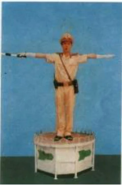
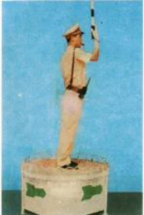

Lý thuyết lái xe · Chương 1
Quy định và quy tắc giao thông
Ôn khái niệm đường bộ, hiệu lệnh, quyền ưu tiên và cách nhường đường khi tham gia giao thông.
180 câu hỏi, từ câu 1 đến câu 180. Nguồn nội dung · Bộ 600 câu hỏi dùng cho sát hạch lái xe cơ giới đường bộ · Cục CSGT, 2025.
Đi đến nhóm câu hỏi
Câu hỏi và đáp án
Câu 1 Phần của đường bộ được sử dụng cho phương tiện giao thông đường bộ đi lại là gì?
- Phần mặt đường và lề đường.
- Phần đường xe chạy.
- Phần đường xe cơ giới.
Xem đáp án
B. Phần đường xe chạy.
Câu 2 Làn đường là gì?
- Là một phần của phần đường xe chạy được chia theo chiều dọc của đường, sử dụng cho xe chạy.
- Là một phần của phần đường xe chạy được chia theo chiều dọc của đường, có đủ chiều rộng cho xe chạy an toàn.
- Là đường cho xe ô tô chạy, dừng, đỗ an toàn.
Xem đáp án
B. Là một phần của phần đường xe chạy được chia theo chiều dọc của đường, có đủ chiều rộng cho xe chạy an toàn.
Câu 3 Khổ giới hạn của đường bộ được hiểu như thế nào là đúng?
- Khổ giới hạn của đường bộ là khoảng trống có kích thước giới hạn về chiều rộng, chiều cao của đường bộ để các xe, bao gồm cả hàng hoá xếp trên xe đi qua được an toàn và được xác định theo quy chuẩn, tiêu chuẩn kỹ thuật của đường bộ.
- Là khoảng trống có kích thước giới hạn về chiều rộng của đường, cầu, bến phà, hầm trên đường b ộ để các xe kể cả hàng hóa xếp trên xe đi qua được an toàn.
- Là khoảng trống có kích thước giới hạn về chiều cao của cầu, bến phà, hầm trên đường bộ để các xe đi qua được an toàn.
Xem đáp án
A. Khổ giới hạn của đường bộ là khoảng trống có kích thước giới hạn về chiều rộng, chiều cao của đường bộ để các xe, bao gồm cả hàng hoá xếp trên xe đi qua được an toàn và được xác định theo quy chuẩn, tiêu chuẩn kỹ thuật của đường bộ.
Câu 4 Dải phân cách được lắp đặt để làm gì?
- Để phân chia các làn đường dành cho xe cơ giới và xe thô sơ trên đường cao tốc.
- Để phân chia phần đường xe chạy thành hai chiều riêng biệt hoặc để phân chia phần đường dành cho xe cơ giới và xe thô sơ hoặc của nhiều loại xe khác nhau trên cùng một chiều đường.
- Để phân tách phần đường xe chạy và hành lang an toàn giao thông.
Xem đáp án
B. Để phân chia phần đường xe chạy thành hai chiều riêng biệt hoặc để phân chia phần đường dành cho xe cơ giới và xe thô sơ hoặc của nhiều loại xe khác nhau trên cùng một chiều đường.
Câu 5 Vạch kẻ đường là gì?
- Là báo hiệu đường bộ để hỗ trợ cảnh báo nguy hiểm cho người tham gia giao thông đường bộ.
- Là vạch chỉ sự phân chia làn đường, vị trí hoặc hướng đi, vị trí dừng lại.
- Là báo hiệu cho người tham gia giao thông đường bộ về các thông tin của đường bộ.
- Cả ba ý trên.
Xem đáp án
B. Là vạch chỉ sự phân chia làn đường, vị trí hoặc hướng đi, vị trí dừng lại.
Câu 6 Người điều khiển phương tiện tham gia giao thông đường bộ được hiểu như thế nào là đúng?
- Là người điều khiển xe cơ giới, người điều khiển xe thô sơ, người điều khiển xe máy chuyên dùng.
- Là người được giao nhiệm vụ hướng dẫn giao thông trên đường bộ.
- Cả hai ý trên.
Xem đáp án
A. Là người điều khiển xe cơ giới, người điều khiển xe thô sơ, người điều khiển xe máy chuyên dùng.
Câu 7 Người lái xe được hiểu như thế nào là đúng?
- Là người điều khiển xe cơ giới.
- Là người điều khiển xe thô sơ.
- Là người điều khiển xe máy chuyên dùng.
Xem đáp án
A. Là người điều khiển xe cơ giới.
Câu 8 Trong nhóm các phương tiện giao thông đường bộ dưới đây, nhóm phương tiện nào là xe cơ giới?
- Xe ô tô; máy kéo; xe mô tô hai bánh; xe mô tô ba bánh; xe gắn máy; xe cơ giới dùng cho người khuyết tật và xe máy chuyên dùng; xe đạp, xe đạp máy, xe đạp điện.
- Xe ô tô; rơ moóc được kéo bởi xe ô tô; sơ mi rơ moóc được kéo bởi ô tô đầu kéo; xe chở người bốn bánh có gắn động cơ; xe chở hàng bốn bánh có gắn động cơ; xe mô tô, xe gắn máy và các loại xe tương tự.
Xem đáp án
B. Xe ô tô; rơ moóc được kéo bởi xe ô tô; sơ mi rơ moóc được kéo bởi ô tô đầu kéo; xe chở người bốn bánh có gắn động cơ; xe chở hàng bốn bánh có gắn động cơ; xe mô tô, xe gắn máy và các loại xe tương tự.
Câu 9 Trong nhóm các phương tiện giao thông đường bộ dưới đây, nhóm phương tiện nào là xe thô sơ?
- Xe đạp, xe đạp máy, xe đạp điện; xe xích lô; xe lăn dùng cho người khuyết tật; xe vật nuôi kéo và các loại xe tương tự.
- Xe đạp (kể cả xe đạp máy, xe đạp điện), xe gắn máy, xe cơ giới dùng cho người khuyết tật và xe máy chuyên dùng.
- Xe ô tô, máy kéo, rơ moóc hoặc sơ mi rơ moóc được kéo bởi xe ô tô, máy kéo.
Xem đáp án
A. Xe đạp, xe đạp máy, xe đạp điện; xe xích lô; xe lăn dùng cho người khuyết tật; xe vật nuôi kéo và các loại xe tương tự.
Câu 10 Phương tiện giao thông đường bộ gồm những loại nào?
- Phương tiện giao thông cơ giới đường bộ.
- Phương tiện giao thông thô sơ đường bộ, xe máy chuyên dùng và các loại xe tương tự.
- Cả hai ý trên.
Xem đáp án
C. Cả hai ý trên.
Câu 11 Người tham gia giao thông đường bộ gồm những đối tượng nào?
- Người điều khiển, người được chở trên phương tiện tham gia giao thông đường bộ.
- Người điều khiển, dẫn dắt vật nuôi trên đường bộ; người đi bộ trên đường bộ.
- Cả hai ý trên.
Xem đáp án
C. Cả hai ý trên.
Câu 12 Người điều khiển phương tiện tham gia giao thông đường bộ gồm những đối tượng nào dưới đây?
- Người điều khiển xe cơ giới, người điều khiển xe thô sơ.
- Người điều khiển xe máy chuyên dùng.
- Cả hai ý trên.
Xem đáp án
C. Cả hai ý trên.
Câu 13 Người điều khiển giao thông đường bộ được hiểu như thế nào là đúng?
- Là người điều khiển phương tiện tham gia giao thông đường bộ.
- Là Cảnh sát giao thông và người được giao nhiệm vụ hướng dẫn giao thông trên đường bộ.
- Là người tham gia giao thông đường bộ.
Xem đáp án
B. Là Cảnh sát giao thông và người được giao nhiệm vụ hướng dẫn giao thông trên đường bộ.
Câu 14 Dừng xe được hiểu như thế nào là đúng?
- Là trạng thái đứng yên của xe không giới hạn thời gian để cho người lên, xuống xe, xếp dỡ hàng hóa hoặc thực hiện công việc khác.
- Là trạng thái đứng yên tạm thời của xe trong một khoảng thời gian cần thiết đủ để cho người lên xe, xuống xe, xếp dỡ hàng hóa, kiểm tra kỹ thuật xe hoặc hoạt động khác. Khi dừng xe không được tắt máy và không được rời khỏi vị trí lái, trừ trường hợp rời khỏi vị trí lái để đóng, mở cửa xe, xếp dỡ hàng hóa, kiểm tra kỹ thuật xe nhưng phải sử dụng phanh đỗ xe hoặc thực hiện biện pháp an toàn khác.
- Là trạng thái đứng yên của xe không giới hạn thời gian giữa 02 lần vận chuyển hàng hóa hoặc hành khách.
Xem đáp án
B. Là trạng thái đứng yên tạm thời của xe trong một khoảng thời gian cần thiết đủ để cho người lên xe, xuống xe, xếp dỡ hàng hóa, kiểm tra kỹ thuật xe hoặc hoạt động khác. Khi dừng xe không được tắt máy và không được rời khỏi vị trí lái, trừ trường hợp rời khỏi vị trí lái để đóng, mở cửa xe, xếp dỡ hàng hóa, kiểm tra kỹ thuật xe nhưng phải sử dụng phanh đỗ xe hoặc thực hiện biện pháp an toàn khác.
Câu 15 Đỗ xe được hiểu như thế nào là đúng?
- Là trạng thái đứng yên của xe có giới hạn thời gian trong một khoảng thời gian cần thiết đủ để cho người lên, xuống xe đó, xếp dỡ hàng hóa hoặc thực hiện công việc khác.
- Là trạng thái đứng yên của xe không giới hạn thời gian. Khi đỗ xe, người điều khiển phương tiện tham gia giao thông đường bộ chỉ được rời khỏi xe khi đã sử dụng phanh đỗ xe hoặc thực hiện biện pháp an toàn khác. Xe đỗ trên đoạn đường dốc phải đánh lái về phía lề đường, chèn bánh.
Xem đáp án
B. Là trạng thái đứng yên của xe không giới hạn thời gian. Khi đỗ xe, người điều khiển phương tiện tham gia giao thông đường bộ chỉ được rời khỏi xe khi đã sử dụng phanh đỗ xe hoặc thực hiện biện pháp an toàn khác. Xe đỗ trên đoạn đường dốc phải đánh lái về phía lề đường, chèn bánh.
Câu 16 Đường cao tốc được hiểu như thế nào là đúng?
- Là một cấp kỹ thuật của đường bộ, chỉ dành cho một số loại xe cơ giới, xe máy chuyên dùng tham gia giao thông theo quy định của pháp luật. Có dải phân cách phân chia hai chiều xe chạy riêng biệt, không giao nhau cùng mức với một hoặc các đường khác, chỉ cho xe ra, vào ở những điểm nhất định. Có hàng rào bảo vệ, trang thiết bị phục vụ, bảo đảm giao thông liên tục, an toàn, rút ngắn thời gian hành trình.
- Là đường nối liền Thủ đô Hà Nội với trung tâm hành chính cấp tỉnh; đường nối liền các trung tâm hành chính cấp tỉnh; đường có vị trí quan trọng đối với sự phát triển kinh tế- xã hội, bảo đảm quốc phòng, an ninh của vùng, khu vực.
Xem đáp án
A. Là một cấp kỹ thuật của đường bộ, chỉ dành cho một số loại xe cơ giới, xe máy chuyên dùng tham gia giao thông theo quy định của pháp luật. Có dải phân cách phân chia hai chiều xe chạy riêng biệt, không giao nhau cùng mức với một hoặc các đường khác, chỉ cho xe ra, vào ở những điểm nhất định. Có hàng rào bảo vệ, trang thiết bị phục vụ, bảo đảm giao thông liên tục, an toàn, rút ngắn thời gian hành trình.
Câu 17 Thiết bị an toàn cho trẻ em được hiểu như thế nào là đúng?
- Là thiết bị có đủ khả năng bảo đảm an toàn cho trẻ em ở tư thế ngồi hoặc nằm trên xe ô tô, được thiết kế để giảm nguy cơ chấn thương cho người dùng trong trường hợp xảy ra va chạm hoặc xe ô tô giảm tốc độ đột ngột, bằng cách hạn chế sự di chuyển của cơ thể trẻ em.
- Là thiết bị có đủ khả năng bảo đảm an toàn cho trẻ em ở tư thế đứng hoặc nằm trên xe ô tô, được thiết kế để giảm nguy cơ chấn thương cho người dùng trong trường hợp xe ô tô lưu thông bình thường.
Xem đáp án
A. Là thiết bị có đủ khả năng bảo đảm an toàn cho trẻ em ở tư thế ngồi hoặc nằm trên xe ô tô, được thiết kế để giảm nguy cơ chấn thương cho người dùng trong trường hợp xảy ra va chạm hoặc xe ô tô giảm tốc độ đột ngột, bằng cách hạn chế sự di chuyển của cơ thể trẻ em.
Câu 18 Theo chức năng phục vụ thì đường bộ được phân loại như thế nào?
- Đường chính, đường nhánh, đường gom, đường bên, đường dành cho giao thông công cộng, đường nội bộ, đường dành riêng cho người đi bộ, người đi xe đạp và các đường khác.
- Đường chính, đường nhánh, đường gom, đường dành cho giao thông công cộng, đường nội bộ, đường dành riêng cho người đi bộ, người đi xe đạp và các đường khác.
- Đường chính, đường nhánh, đường gom, đường bên, đường dành cho giao thông công cộng, đường dành riêng cho người đi bộ, người đi xe đạp và các đường khác.
Xem đáp án
A. Đường chính, đường nhánh, đường gom, đường bên, đường dành cho giao thông công cộng, đường nội bộ, đường dành riêng cho người đi bộ, người đi xe đạp và các đường khác.
Câu 19 Hành vi nào dưới đây bị nghiêm cấm?
- Sử dụng xe đạp đi trên các tuyến quốc lộ.
- Rải vật sắc nhọn, đổ chất gây trơn trượt trên đường bộ.
- Cả hai ý trên.
Xem đáp án
B. Rải vật sắc nhọn, đổ chất gây trơn trượt trên đường bộ.
Câu 20 Hành vi đưa xe cơ giới, xe máy chuyên dùng tham gia giao thông đường bộ nào dưới đây bị cấm?
- Không có chứng nhận kiểm định an toàn kỹ thuật và bảo vệ môi trường.
- Hết niên hạn sử dụng.
- Cả hai ý trên.
Xem đáp án
C. Cả hai ý trên.
Câu 21 Tổ chức đua xe được phép thực hiện khi nào?
- Trên đường phố không có người qua lại.
- Được người dân ủng hộ.
- Được cơ quan có thẩm quyền cấp phép.
Xem đáp án
C. Được cơ quan có thẩm quyền cấp phép.
Câu 22 Hành vi đua xe trái phép bị xử lý như thế nào?
- Chỉ bị nhắc nhở.
- Tùy theo mức độ của hành vi vi phạm có thể bị xử lý hành chính hoặc xử lý hình sự.
Xem đáp án
B. Tùy theo mức độ của hành vi vi phạm có thể bị xử lý hành chính hoặc xử lý hình sự.
Câu 23 Hành vi của người điều khiển xe ô tô và các loại xe tương tự khi tham gia giao thông đường bộ mà trong cơ thể có chất ma túy thì bị áp dụng hình thức xử phạt vi phạm hành chính nào dưới đây?
- Bị phạt tiền.
- Bị tước giấy phép lái xe.
- Cả hai ý trên.
Xem đáp án
C. Cả hai ý trên.
Câu 24 Người điều khiển phương tiện tham gia giao thông đường bộ mà trong máu hoặc hơi thở có nồng độ cồn có bị nghiêm cấm không?
- Bị nghiêm cấm.
- Không bị nghiêm cấm.
- Không bị nghiêm cấm, nếu nồng độ cồn trong máu ở mức nhẹ, có thể điều khiển phương tiện tham gia giao thông.
Xem đáp án
A. Bị nghiêm cấm.
Câu 25 Hành vi của người điều khiển xe ô tô và các loại xe tương tự khi tham gia giao thông đường bộ mà trong máu hoặc hơi thở có nồng độ cồn thì bị áp dụng hình thức xử phạt vi phạm hành chính nào dưới đây?
- Bị phạt tiền.
- Có thể bị tước giấy phép lái xe.
- Cả hai ý trên.
Xem đáp án
C. Cả hai ý trên.
Câu 26 Theo Luật Phòng chống tác hại của rượu, bia, đối tượng nào dưới đây bị cấm sử dụng rượu, bia khi tham gia giao thông?
- Người điều khiển xe ô tô, xe mô tô, xe đạp, xe gắn máy.
- Người được chở trên xe cơ giới.
- Cả hai ý trên.
Xem đáp án
A. Người điều khiển xe ô tô, xe mô tô, xe đạp, xe gắn máy.
Câu 27 Hành vi giao xe ô tô, mô tô cho người nào sau đây tham gia giao thông đường bộ bị nghiêm cấm?
- Người chưa đủ tuổi theo quy định.
- Người không có giấy phép lái xe.
- Người có giấy phép lái xe nhưng đã bị trừ hết 12 điểm.
- Cả ba ý trên.
Xem đáp án
D. Cả ba ý trên.
Câu 28 Hành vi nào sau đây bị nghiêm cấm?
- Điều khiển xe cơ giới lạng lách, đánh võng, rú ga liên tục khi tham gia giao thông trên đường.
- Xúc phạm, đe dọa, cản trở, chống đối hoặc không chấp hành hiệu lệnh, hướng dẫn, yêu cầu kiểm tra, kiểm soát của người thi hành công vụ về bảo đảm trật tự, an toàn giao thông đường bộ.
- Cả hai ý trên.
Xem đáp án
C. Cả hai ý trên.
Câu 29 Các hành vi nào sau đây bị cấm đối với phương tiện tham gia giao thông đường bộ?
- Cải tạo xe ô tô loại khác thành xe ô tô chở người phục vụ mục đích quốc phòng, an ninh.
- Cải tạo trái phép; cố ý can thiệp làm sai lệch chỉ số trên đồng hồ báo quãng đường đã chạy của xe ô tô; cắt, hàn, tẩy xóa, đục sửa, đóng lại trái phép số khung, số động cơ của xe cơ giới, xe máy chuyên dùng.
Xem đáp án
B. Cải tạo trái phép; cố ý can thiệp làm sai lệch chỉ số trên đồng hồ báo quãng đường đã chạy của xe ô tô; cắt, hàn, tẩy xóa, đục sửa, đóng lại trái phép số khung, số động cơ của xe cơ giới, xe máy chuyên dùng.
Câu 30 Hành vi nào sau đây bị cấm?
- Lắp đặt, sử dụng thiết bị âm thanh, ánh sáng trên xe cơ giới, xe máy chuyên dùng gây mất trật tự, an toàn giao thông đường bộ.
- Cản trở người, phương tiện tham gia giao thông trên đường bộ; ném gạch, đất, đá, cát hoặc vật thể khác vào người, phương tiện đang tham gia giao thông trên đường bộ.
- Cả hai ý trên.
Xem đáp án
C. Cả hai ý trên.
Câu 31 Việc sản xuất, sử dụng, mua, bán trái phép biển số xe có bị nghiêm cấm hay không?
- Không bị nghiêm cấm.
- Bị nghiêm cấm.
- Bị nghiêm cấm tuỳ trường hợp.
Xem đáp án
B. Bị nghiêm cấm.
Câu 32 Khi điều khiển phương tiện tham gia giao thông, những hành vi nào dưới đây bị nghiêm cấm?
- Thay đổi tốc độ của xe nhiều lần.
- Điều khiển phương tiện sau 23 giờ trong ngày.
- Lạng lách, đánh võng, rú ga liên tục.
Xem đáp án
C. Lạng lách, đánh võng, rú ga liên tục.
Câu 33 Có bao nhiêu nhóm biển báo hiệu đường bộ?
- Ba nhóm: Biển báo cấm, biển báo nguy hiểm và biển hiệu lệnh.
- Bốn nhóm: Biển báo cấm, biển báo nguy hiểm, biển hiệu lệnh và biển phụ.
- Năm nhóm: Biển báo cấm, biển báo nguy hiểm, biển hiệu lệnh, biển chỉ dẫn, biển phụ.
Xem đáp án
C. Năm nhóm: Biển báo cấm, biển báo nguy hiểm, biển hiệu lệnh, biển chỉ dẫn, biển phụ.
Câu 34 Tại nơi có vạch kẻ đường hoặc tại nơi mà người đi bộ, xe lăn của người khuyết tật đang qua đường, người điều khiển phương tiện tham gia giao thông phải thực hiện như thế nào?
- Giảm tốc độ và nhường đường cho người đi bộ, xe lăn của người khuyết tật qua đường đảm bảo an toàn.
- Quan sát, giảm tốc độ hoặc dừng lại để bảo đảm an toàn cho người đi bộ, xe lăn của người khuyết tật qua đường.
- Quan sát, tăng tốc độ và điều khiển phương tiện nhanh chóng đi qua.
Xem đáp án
B. Quan sát, giảm tốc độ hoặc dừng lại để bảo đảm an toàn cho người đi bộ, xe lăn của người khuyết tật qua đường.
Câu 35 Người điều khiển xe mô tô phải phải quan sát, giảm tốc độ hoặc dừng lại để bảo đảm an toàn trong các trường hợp nào dưới đây?
- Đường hẹp, đường vòng, đường quanh co, đường đèo, dốc.
- Nơi cầu, cống hẹp, đập tràn, đường ngầm, hầm chui, hầm đường bộ.
- Trời mưa, gió, sương, khói, bụi, mặt đường trơn trượt, lầy lội, có nhiều đất đá, vật liệu rơi vãi ảnh hưởng đến an toàn giao thông đường bộ.
- Cả ba ý trên.
Xem đáp án
D. Cả ba ý trên.
Câu 36 Khi gặp hiệu lệnh điều khiển của Cảnh sát giao thông như hình dưới đây thì người tham gia giao thông đường bộ phải đi như thế nào là đúng quy tắc giao thông?

- Người tham gia giao thông đường bộ ở các hướng phải dừng lại.
- Người tham gia giao thông đường bộ ở các hướng được đi theo chiều gậy chỉ của Cảnh sát giao thông.
- Người tham gia giao thông đường bộ ở phía trước và phía sau người điều khiển được đi tất cả các hướng; người tham gia giao thông đường bộ ở phía bên phải và phía bên trái người điều khiển phải dừng lại.
- Người tham gia giao thông đường bộ ở phía trước và phía sau người điều khiển phải dừng lại; người tham gia giao thông đường bộ ở phía bên phải và phía bên trái người điều khiển được đi tất cả các hướng.
Xem đáp án
D. Người tham gia giao thông đường bộ ở phía trước và phía sau người điều khiển phải dừng lại; người tham gia giao thông đường bộ ở phía bên phải và phía bên trái người điều khiển được đi tất cả các hướng.
Câu 37 Khi gặp hiệu lệnh điều khiển của Cảnh sát giao thông như hình dưới đây thì người tham gia giao thông đường bộ phải đi như thế nào là đúng quy tắc giao thông?

- Người tham gia giao thông đường bộ ở phía sau Cảnh sát giao thông được đi, các hướng khác phải dừng lại.
- Người tham gia giao thông đường bộ được rẽ phải theo chiều mũi tên màu xanh ở bục Cảnh sát giao thông.
- Người tham gia giao thông đường bộ ở tất cả các hướng phải dừng lại, trừ các xe đã ở trong khu vực giao nhau.
- Người tham gia giao thông đường bộ ở phía trước Cảnh sát giao thông phải dừng lại, các hướng khác được đi.
Xem đáp án
C. Người tham gia giao thông đường bộ ở tất cả các hướng phải dừng lại, trừ các xe đã ở trong khu vực giao nhau.
Câu 38 Khi hiệu lệnh của người điều khiển giao thông trái với tín hiệu đèn giao thông hoặc biển báo hiệu đường bộ thì người tham gia giao thông đường bộ phải chấp hành báo hiệu đường bộ nào dưới đây?
- Theo hiệu lệnh của người điều khiển giao thông.
- Theo tín hiệu đèn giao thông.
- Theo biển báo hiệu đường bộ.
Xem đáp án
A. Theo hiệu lệnh của người điều khiển giao thông.
Câu 39 Khi ở một vị trí vừa có biển báo hiệu đặt cố định vừa có biển báo hiệu tạm thời mà hai biển có ý nghĩa khác nhau, người tham gia giao thông đường bộ phải chấp hành hiệu lệnh của biển báo hiệu nào?
- Biển báo hiệu đặt cố định.
- Biển báo hiệu tạm thời.
- Theo quyết định của người tham gia giao thông nhưng phải bảo đảm an toàn.
Xem đáp án
B. Biển báo hiệu tạm thời.
Câu 40 Tại nơi đường giao nhau, khi đèn điều khiển giao thông có tín hiệu màu vàng, người điều khiển phương tiện tham gia giao thông phải chấp hành như thế nào là đúng quy tắc giao thông?
- Dừng lại trước vạch dừng; trường hợp đang đi trên vạch dừng hoặc đã đi qua vạch dừng mà tín hiệu đèn màu vàng thì được đi tiếp; trường hợp tín hiệu đèn màu vàng nhấp nháy, người điều khiển phương tiện tham gia giao thông đường bộ được đi nhưng phải quan sát, giảm tốc độ hoặc dừng lại nhường đường cho người đi bộ, xe lăn của người khuyết tật qua đường hoặc các phương tiện khác.
- Tăng tốc độ nhanh chóng vượt qua nút giao.
- Quan sát, giảm tốc độ, từ từ vượt qua nút giao.
Xem đáp án
A. Dừng lại trước vạch dừng; trường hợp đang đi trên vạch dừng hoặc đã đi qua vạch dừng mà tín hiệu đèn màu vàng thì được đi tiếp; trường hợp tín hiệu đèn màu vàng nhấp nháy, người điều khiển phương tiện tham gia giao thông đường bộ được đi nhưng phải quan sát, giảm tốc độ hoặc dừng lại nhường đường cho người đi bộ, xe lăn của người khuyết tật qua đường hoặc các phương tiện khác.
Câu 41 Người lái xe trên đường cần chấp hành quy định về tốc độ tối đa như thế nào?
- Chỉ lớn hơn tốc độ tối đa cho phép khi đường vắng.
- Chỉ lớn hơn tốc độ tối đa cho phép khi vào ban đêm.
- Không vượt quá tốc độ tối đa cho phép.
Xem đáp án
C. Không vượt quá tốc độ tối đa cho phép.
Câu 42 Khi chở trẻ em dưới 10 tuổi và chiều cao dưới 1,35 mét trên xe ô tô, người lái xe phải thực hiện quy tắc nào dưới đây để bảo đảm an toàn?
- Không được cho trẻ em ngồi cùng hàng ghế với người lái xe, trừ loại xe ô tô chỉ có một hàng ghế; người lái xe phải sử dụng, hướng dẫn sử dụng thiết bị an toàn phù hợp cho trẻ em.
- Cho trẻ em ngồi cùng hàng ghế với người lái xe, người lái xe phải sử dụng, hướng dẫn sử dụng thiết bị an toàn phù hợp cho trẻ em.
Xem đáp án
A. Không được cho trẻ em ngồi cùng hàng ghế với người lái xe, trừ loại xe ô tô chỉ có một hàng ghế; người lái xe phải sử dụng, hướng dẫn sử dụng thiết bị an toàn phù hợp cho trẻ em.
Câu 43 Phương tiện tham gia giao thông đường bộ di chuyển với tốc độ thấp hơn phải đi như thế nào?
- Đi về bên trái theo chiều đi của mình.
- Đi về bên phải theo chiều đi của mình.
- Đi ở bất cứ bên nào nhưng phải bấm đèn cảnh báo nguy hiểm để báo hiệu cho các phương tiện khác.
Xem đáp án
B. Đi về bên phải theo chiều đi của mình.
Câu 44 Trên một chiều đường có vạch kẻ phân làn đường, người lái xe cơ giới, xe máy chuyên dùng phải điều khiển xe đi trên làn đường nào?
- Đi trên làn đường bên phải trong cùng.
- Đi trên làn đường bên trái.
- Đi ở bất cứ làn nào nhưng phải bảo đảm tốc độ cho phép.
Xem đáp án
B. Đi trên làn đường bên trái.
Câu 45 Người lái xe phải giảm tốc độ, có tín hiệu rẽ phải và đi sát về bên phải của phần đường xe chạy trong các trường hợp nào dưới đây?
- Khi xe chạy phía trước có tín hiệu vượt xe khác.
- Khi phía trước có xe chạy ngược chiều.
- Khi xe sau xin vượt nếu đủ điều kiện an toàn.
- Khi xe sau có tín hiệu vượt bên phải.
Xem đáp án
C. Khi xe sau xin vượt nếu đủ điều kiện an toàn.
Câu 46 Vượt xe là gì?
- Là tình huống giao thông trên đường mà mỗi chiều đường xe chạy chỉ có một làn đường dành cho xe cơ giới, xe đi phía sau di chuyển sang bên trái để di chuyển lên trước xe phía trước.
- Là tình huống giao thông trên đường có từ hai làn đường dành cho xe cơ giới cùng chiều trở lên được phân biệt bằng vạch kẻ đường, xe đi phía sau di chuyển lên trước xe phía trước theo quy tắc sử dụng làn đường.
Xem đáp án
A. Là tình huống giao thông trên đường mà mỗi chiều đường xe chạy chỉ có một làn đường dành cho xe cơ giới, xe đi phía sau di chuyển sang bên trái để di chuyển lên trước xe phía trước.
Câu 47 Người lái xe được phép vượt xe trên cầu hẹp có một làn đường, đường cong có tầm nhìn bị hạn chế hay không?
- Được phép vượt khi đường vắng.
- Không được phép vượt.
- Được phép vượt khi có việc gấp.
Xem đáp án
B. Không được phép vượt.
Câu 48 Muốn vượt xe phía trước, người lái xe mô tô phải có tín hiệu như thế nào dưới đây để bảo đảm an toàn?
- Bấm còi liên tục để xe phía trước biết xe mình xin vượt.
- Rú ga liên tục để xe phía trước biết xe mình xin vượt.
- Báo hiệu nhấp nháy bằng đèn chiếu sáng phía trước hoặc còi.
Xem đáp án
C. Báo hiệu nhấp nháy bằng đèn chiếu sáng phía trước hoặc còi.
Câu 49 Khi lái xe trong khu đông dân cư, khu vực cơ sở khám bệnh, chữa bệnh trừ các khu vực có biển cấm sử dụng còi, người lái xe được sử dụng còi trong thời gian nào?
- Từ 22 giờ ngày hôm trước đến 05 giờ ngày hôm sau.
- Từ 05 giờ đến 22 giờ.
- Từ 23 giờ ngày hôm trước đến 05 giờ sáng hôm sau.
Xem đáp án
B. Từ 05 giờ đến 22 giờ.
Câu 50 Phương tiện tham gia giao thông đường bộ chỉ được sử dụng tín hiệu còi trong các trường hợp nào sau đây?
- Để báo hiệu cho người tham gia giao thông đường bộ khi xuất hiện tình huống có thể mất an toàn giao thông hoặc báo hiệu chuẩn bị vượt xe.
- Để báo hiệu cho người tham gia giao thông đường bộ từ 22 giờ ngày hôm trước đến 05 giờ ngày hôm sau trong khu đông dân cư, khu vực cơ sở khám bệnh, chữa bệnh, trừ xe ưu tiên.
- Cả hai ý trên.
Xem đáp án
A. Để báo hiệu cho người tham gia giao thông đường bộ khi xuất hiện tình huống có thể mất an toàn giao thông hoặc báo hiệu chuẩn bị vượt xe.
Câu 51 Người lái xe sử dụng đèn như thế nào khi đi trên các đoạn đường qua khu đông dân cư có hệ thống chiếu sáng đang hoạt động?
- Chỉ bật đèn chiếu xa (đèn pha).
- Bật đèn chiếu xa (đèn pha) khi đường vắng, bật đèn chiếu gần (đèn cốt) khi có xe đi ngược chiều.
- Chỉ bật đèn chiếu gần (đèn cốt).
Xem đáp án
C. Chỉ bật đèn chiếu gần (đèn cốt).
Câu 52 Khi điều khiển phương tiện tham gia giao thông, hành vi nào sau đây bị cấm?
- Dùng tay cầm và sử dụng điện thoại hoặc thiết bị điện tử khác.
- Chỉ được chở người trên thùng xe ô tô chở hàng trong trường hợp chở người đi làm nhiệm vụ cứu nạn, cứu hộ, phòng, chống thiên tai, dịch bệnh hoặc thực hiện nhiệm vụ khẩn cấp.
Xem đáp án
A. Dùng tay cầm và sử dụng điện thoại hoặc thiết bị điện tử khác.
Câu 53 Người lái xe không được vượt xe khác khi gặp trường hợp nào dưới đây?
- Trên cầu hẹp có một làn đường; nơi đường giao nhau, đường bộ giao nhau cùng mức với đường sắt; khi gặp xe ưu tiên.
- Trên cầu có từ 02 làn xe trở lên.
- Trên đường có 02 làn đường được phân chia làn bằng vạch kẻ nét đứt.
Xem đáp án
A. Trên cầu hẹp có một làn đường; nơi đường giao nhau, đường bộ giao nhau cùng mức với đường sắt; khi gặp xe ưu tiên.
Câu 54 Nơi nào cấm quay đầu xe?
- Ở phần đường dành cho người đi bộ qua đường, trên cầu, đầu cầu, gầm cầu vượt, ngầm.
- Tại nơi đường bộ giao nhau cùng mức với đường sắt, đường hẹp, đường dốc, đoạn đường cong tầm nhìn bị che khuất, trên đường cao tốc, trong hầm đường bộ, trên đường một chiều.
- Cả hai ý trên.
Xem đáp án
C. Cả hai ý trên.
Câu 55 Người lái xe không được quay đầu xe trong các trường hợp nào dưới đây?
- Ở phần đường dành cho người đi bộ qua đường, trên cầu, đầu cầu, trên đường cao tốc, tại nơi đường bộ giao nhau cùng mức với đường sắt,đường hẹp, đường dốc.
- Ở phía trước hoặc phía sau của phần đường dành cho người đi bộ qua đường, trên đường quốc lộ.
- Cả hai ý trên.
Xem đáp án
A. Ở phần đường dành cho người đi bộ qua đường, trên cầu, đầu cầu, trên đường cao tốc, tại nơi đường bộ giao nhau cùng mức với đường sắt,đường hẹp, đường dốc.
Câu 56 Trước khi cho xe chuyển hướng, người lái xe phải làm gì để bảo đảm an toàn giao thông?
- Phải quan sát, bảo đảm khoảng cách an toàn với xe phía sau.
- Giảm tốc độ và có tín hiệu báo hướng rẽ.
- Chuyển dần sang làn gần nhất với hướng rẽ. Khi bảo đảm an toàn, không gây trở ngại cho người và phương tiện khác mới được chuyển hướng.
- Cả ba ý trên.
Xem đáp án
D. Cả ba ý trên.
Câu 57 Khi chuyển làn đường, người lái xe phải bật đèn tín hiệu báo rẽ như thế nào là đúng quy tắc giao thông?
- Khi bắt đầu chuyển làn đường.
- Trước khi thay đổi làn đường.
- Sau khi thay đổi làn đường.
Xem đáp án
B. Trước khi thay đổi làn đường.
Câu 58 Người lái xe không được lùi xe ở những khu vực nào dưới đây?
- Ở đường một chiều, khu vực cấm dừng, trên phần đường dành cho người đi bộ qua đường.
- Nơi đường bộ giao nhau, đường bộ giao nhau cùng mức với đường sắt.
- Nơi tầm nhìn bị che khuất, trong hầm đường bộ, trên đường cao tốc.
- Cả ba ý trên.
Xem đáp án
D. Cả ba ý trên.
Câu 59 Người điều khiển phương tiện tham gia giao thông không được dừng xe, đỗ xe ở những vị trí nào sau đây?
- Trên miệng cống thoát nước, miệng hầm của đường điện thoại, điện cao thế, chỗ dành riêng cho xe chữa cháy lấy nước.
- Trong phạm vi an toàn của đường sắt.
- Cả hai ý trên.
Xem đáp án
C. Cả hai ý trên.
Câu 60 Trên đường phố, người điều khiển phương tiện tham gia giao thông đường bộ được dừng xe, đỗ xe sát theo lề đường, vỉa hè phía bên phải theo chiều đi của mình; bánh xe gần nhất không được cách xa lề đường, vỉa hè không quá bao nhiêu mét trong các trường hợp dưới đây và không gây cản trở, nguy hiểm cho người và phương tiện tham gia giao thông đường bộ?
- 0,25 mét.
- 0,3 mét.
- 0,4 mét.
- 0,5 mét.
Xem đáp án
A. 0,25 mét.
Câu 61 Khi dừng, đỗ xe trên đường phố hẹp, người lái xe ô tô phải dừng, đỗ xe ở vị trí cách xe ô tô đang đỗ ngược chiều khoảng cách tối thiểu là bao nhiêu mét trong các trường hợp dưới đây để bảo đảm an toàn?
- 10 mét.
- 15 mét.
- 20 mét.
- 25 mét.
Xem đáp án
C. 20 mét.
Câu 62 Người điều khiển phương tiện tham gia giao thông đường bộ không được dừng xe, đỗ xe tại các vị trí nào sau đây?
- Nơi có lề đường rộng hoặc khu đất ở bên ngoài phần đường xe chạy.
- Song song cùng chiều với một xe khác đang dừng, đỗ trên đường; trên đoạn đường cong hoặc gần đầu dốc mà tầm nhìn bị che khuất; bên trái đường một chiều.
- Cả hai ý trên.
Xem đáp án
B. Song song cùng chiều với một xe khác đang dừng, đỗ trên đường; trên đoạn đường cong hoặc gần đầu dốc mà tầm nhìn bị che khuất; bên trái đường một chiều.
Câu 63 Người điều khiển xe mô tô hai bánh, xe mô tô ba bánh, xe gắn máy có được phép sử dụng xe để kéo hoặc đẩy các phương tiện khác khi tham gia giao thông không?
- Được phép.
- Nếu phương tiện được kéo, đẩy có khối lượng nhỏ hơn phương tiện của mình.
- Tùy trường hợp.
- Không được phép.
Xem đáp án
D. Không được phép.
Câu 64 Khi điều khiển xe mô tô hai bánh, xe mô tô ba bánh, xe gắn máy, những hành vi nào sau đây không được phép?
- Buông cả hai tay; đứng, nằm trên xe điều khiển xe; sử dụng chân chống hoặc vật khác quệt xuống đường khi xe đang chạy.
- Chở tối đa hai người phía sau khi chở người bệnh đi cấp cứu, áp giải người có hành vi vi phạm pháp luật, trẻ em dưới 12 tuổi và người già yếu hoặc người khuyết tật.
Xem đáp án
A. Buông cả hai tay; đứng, nằm trên xe điều khiển xe; sử dụng chân chống hoặc vật khác quệt xuống đường khi xe đang chạy.
Câu 65 Khi điều khiển xe mô tô hai bánh, xe mô tô ba bánh, xe gắn máy, những hành vi nào sau đây không được phép?
- Buông cả hai tay; sử dụng xe để kéo, đẩy xe khác, vật khác; sử dụng chân chống hoặc vật khác quệt xuống đường khi xe đang chạy.
- Sử dụng xe để chở người hoặc hàng hóa; để chân chạm xuống đất khi khởi hành.
- Đội mũ bảo hiểm; chạy xe đúng tốc độ quy định và chấp hành đúng quy tắc giao thông đường bộ.
- Chở người ngồi sau dưới 16 tuổi.
Xem đáp án
A. Buông cả hai tay; sử dụng xe để kéo, đẩy xe khác, vật khác; sử dụng chân chống hoặc vật khác quệt xuống đường khi xe đang chạy.
Câu 66 Người được chở trên xe mô tô hai bánh, xe mô tô ba bánh, xe gắn máy khi tham gia giao thông đường bộ không được thực hiện hành vi nào sau đây?
- Mang, vác vật cồng kềnh.
- Bám, kéo hoặc đẩy các phương tiện khác.
- Dùng tay cầm điện thoại hoặc các thiết bị điện tử khác.
- Ý 1 và ý 2.
Xem đáp án
D. Ý 1 và ý 2.
Câu 67 Người được chở trên xe mô tô hai bánh, xe mô tô ba bánh, xe gắn máy khi tham gia giao thông đường bộ có được bám, kéo hoặc đẩy các phương tiện khác không?
- Được phép.
- Được bám trong trường hợp phương tiện của mình bị hỏng.
- Được kéo, đẩy trong trường hợp phương tiện khác bị hỏng.
- Không được phép.
Xem đáp án
D. Không được phép.
Câu 68 Người lái xe, người được chở trên xe mô tô hai bánh, xe mô tô ba bánh, xe gắn máy phải thực hiện quy định nào dưới đây?
- Đội mũ bảo hiểm theo đúng quy chuẩn kỹ thuật quốc gia và cài quai đúng quy cách.
- Người lái xe phải đội mũ bảo hiểm, người được chở trên xe không nhất thiết phải đội mũ bảo hiểm.
- Phải đội mũ bảo hiểm nhưng không nhất thiết phải cài quai.
Xem đáp án
A. Đội mũ bảo hiểm theo đúng quy chuẩn kỹ thuật quốc gia và cài quai đúng quy cách.
Câu 69 Người lái xe mô tô hai bánh, xe gắn máy được phép chở tối đa hai người trong những trường hợp nào?
- Chở người bệnh đi cấp cứu; áp giải người có hành vi vi phạm pháp luật; trẻ em dưới 12 tuổi; người già yếu hoặc người khuyết tật.
- Người đã uống rượu, bia; người trong cơ thể có chất ma tuý.
- Cả hai ý trên.
Xem đáp án
A. Chở người bệnh đi cấp cứu; áp giải người có hành vi vi phạm pháp luật; trẻ em dưới 12 tuổi; người già yếu hoặc người khuyết tật.
Câu 70 Người lái xe mô tô hai bánh, xe mô tô ba bánh, xe gắn máy không được thực hiện các hành vi nào dưới đây?
- Đi xe dàn hàng ngang; buông cả hai tay.
- Sử dụng xe để kéo, đẩy xe khác, vật khác, dẫn dắt vật nuôi, mang, vác và chở vật cồng kềnh; chở người đứng trên xe, giá đèo hàng hoặc ngồi trên tay lái; xếp hàng hóa trên xe quá giới hạn quy định.
- Ngồi về một bên điều khiển xe; đứng, nằm trên xe điều khiển xe; thay người lái xe khi xe đang chạy; quay người về phía sau để điều khiển xe hoặc bịt mắt điều khiển xe; sử dụng chân chống hoặc vật khác quệt xuống đường khi xe đang chạy.
- Cả ba ý trên.
Xem đáp án
D. Cả ba ý trên.
Câu 71 Người lái xe mô tô hai bánh, xe mô tô ba bánh, xe gắn máy không được thực hiện các hành vi nào sau đây?
- Đi xe dàn hàng ngang; đi xe vào phần đường dành cho người đi bộ và phương tiện khác.
- Sử dụng ô, thiết bị âm thanh, trừ thiết bị trợ thính.
- Cả hai ý trên.
Xem đáp án
C. Cả hai ý trên.
Câu 72 Người lái xe mô tô hai bánh, xe mô tô ba bánh, xe gắn máy không được thực hiện hành vi nào sau đây?
- Đi trên phần đường, làn đường quy định, chấp hành hiệu lệnh của người điều khiển giao thông, đèn tín hiệu giao thông.
- Đi xe dàn hàng ngang, đi xe vào phần đường dành cho người đi bộ.
- Cả hai ý trên.
Xem đáp án
B. Đi xe dàn hàng ngang, đi xe vào phần đường dành cho người đi bộ.
Câu 73 Người được chở trên xe mô tô hai bánh, xe mô tô ba bánh, xe gắn máy khi tham gia giao thông đường bộ có được sử dụng ô khi trời mưa hay không?
- Được sử dụng.
- Chỉ người ngồi sau được sử dụng.
- Không được sử dụng.
- Được sử dụng nếu không có áo mưa.
Xem đáp án
C. Không được sử dụng.
Câu 74 Người được chở trên xe mô tô có được kéo theo người đang điều khiển xe đạp hay không?
- Chỉ được phép nếu cả hai đội mũ bảo hiểm.
- Không được phép.
- Chỉ được thực hiện trên đường vắng.
Xem đáp án
B. Không được phép.
Câu 75 Trường hợp người được chở trên xe mô tô, xe gắn máy, các loại xe tương tự xe mô tô và các loại xe tương tự xe gắn máy không đội "mũ bảo hiểm cho người đi mô tô, xe máy" hoặc không cài quai đúng quy cách (trừ trường hợp chở người bệnh đi cấp cứu, trẻ em dưới 06 tuổi, áp giải người có hành vi vi phạm pháp luật) thì việc xử phạt vi phạm hành chính được quy định như thế nào?
- Không bị xử phạt chỉ bị nhắc nhở.
- Người được chở không bị xử phạt, chỉ xử phạt người điều khiển xe mô tô, xe gắn máy.
- Người được chở bị xử phạt, không xử phạt người điều khiển xe mô tô, xe gắn máy.
- Xử phạt cả người điều khiển và người được chở trên xe mô tô, xe gắn máy.
Xem đáp án
D. Xử phạt cả người điều khiển và người được chở trên xe mô tô, xe gắn máy.
Câu 76 Trong các trường hợp dưới đây, để bảo đảm an toàn khi tham gia giao thông, người lái xe mô tô cần thực hiện như thế nào?
- Phải đội mũ bảo hiểm theo đúng quy chuẩn kỹ thuật quốc gia và cài quai đúng quy cách, không sử dụng ô, điện thoại di động, thiết bị âm thanh (trừ thiết bị trợ thính).
- Phải đội mũ bảo hiểm khi trời mưa gió hoặc trời quá nắng; có thể sử dụng ô, điện thoại di động, thiết bị âm thanh nhưng phải bảo đảm an toàn.
- Phải đội mũ bảo hiểm khi cảm thấy mất an toàn giao thông hoặc khi chuẩn bị di chuyển quãng đường xa.
Xem đáp án
A. Phải đội mũ bảo hiểm theo đúng quy chuẩn kỹ thuật quốc gia và cài quai đúng quy cách, không sử dụng ô, điện thoại di động, thiết bị âm thanh (trừ thiết bị trợ thính).
Câu 77 Thứ tự xuống phà như thế nào là đúng quy tắc giao thông?
- Xe thô sơ, người đi bộ xuống trước, xe cơ giới, xe máy chuyên dùng xuống sau.
- Xe cơ giới, xe máy chuyên dùng xuống trước, xe thô sơ, người đi bộ xuống sau.
- Xe cơ giới, xe thô sơ xuống trước, xe máy chuyên dùng, người đi bộ xuống sau.
Xem đáp án
B. Xe cơ giới, xe máy chuyên dùng xuống trước, xe thô sơ, người đi bộ xuống sau.
Câu 78 Trên đường có nhiều làn đường cho xe đi cùng chiều được phân biệt bằng vạch kẻ phân làn đường, người điều khiển phương tiện tham gia giao thông đường bộ phải cho xe đi như thế nào?
- Cho xe đi trên bất kỳ làn đường nào hoặc giữa 02 làn đường nếu không có xe đi phía trước; khi cần thiết phải chuyển làn đường, người lái xe phải quan sát xe phía trước để bảo đảm an toàn.
- Phải cho xe đi trong một làn đường và chỉ được chuyển làn đường ở những nơi cho phép; mỗi lần chuyển làn đường chỉ được phép chuyển sang một làn đường liền kề; khi chuyển làn đường phải có tín hiệu báo trước; phải quan sát bảo đảm khoảng cách an toàn với xe phía trước, phía sau và hai bên mới được chuyển làn.
- Phải cho xe đi trong một làn đường, chỉ được chuyển làn đường khi vượt xe phía trước cùng làn đường.
Xem đáp án
B. Phải cho xe đi trong một làn đường và chỉ được chuyển làn đường ở những nơi cho phép; mỗi lần chuyển làn đường chỉ được phép chuyển sang một làn đường liền kề; khi chuyển làn đường phải có tín hiệu báo trước; phải quan sát bảo đảm khoảng cách an toàn với xe phía trước, phía sau và hai bên mới được chuyển làn.
Câu 79 Trên đường một chiều có vạch kẻ phân làn đường, xe thô sơ và xe cơ giới phải đi như thế nào là đúng quy tắc giao thông?
- Xe thô sơ phải đi trên làn đường bên trái, xe cơ giới, xe máy chuyên dùng đi trên làn đường bên phải trong cùng.
- Xe thô sơ phải đi trên làn đường bên phải trong cùng, xe cơ giới, xe máy chuyên dùng đi trên làn đường bên trái.
- Xe thô sơ phải đi trên làn đường bên phải trong cùng, xe cơ giới, xe máy chuyên dùng được đi trên tất cả các làn đường.
Xem đáp án
B. Xe thô sơ phải đi trên làn đường bên phải trong cùng, xe cơ giới, xe máy chuyên dùng đi trên làn đường bên trái.
Câu 80 Khi lái xe trong đô thị và khu đông dân cư trong thời gian từ 22 giờ ngày hôm trước đến 05 giờ ngày hôm sau, nếu cần vượt một xe khác, người lái xe phải báo hiệu như thế nào là đúng quy tắc giao thông?
- Chỉ được báo hiệu bằng còi.
- Phải báo hiệu bằng cả còi và đèn.
- Chỉ được báo hiệu bằng đèn.
Xem đáp án
C. Chỉ được báo hiệu bằng đèn.
Câu 81 Khi điều khiển xe chạy trên đường, biết có xe sau xin vượt, nếu đủ điều kiện an toàn người điều khiển phương tiện phải làm gì?
- Tăng tốc độ và ra hiệu cho xe sau vượt, không được gây trở ngại cho xe xin vượt.
- Giảm tốc độ, có tín hiệu rẽ phải để báo hiệu cho người điều khiển phương tiện tham gia giao thông đường bộ phía sau biết được vượt và đi sát về bên phải của phần đường xe chạy cho đến khi xe sau đã vượt qua, không được cản trở đối với xe xin vượt.
- Cho xe đi sát về bên trái của phần đường xe chạy và ra hiệu cho xe sau vượt, không được gây trở ngại cho xe xin vượt.
Xem đáp án
B. Giảm tốc độ, có tín hiệu rẽ phải để báo hiệu cho người điều khiển phương tiện tham gia giao thông đường bộ phía sau biết được vượt và đi sát về bên phải của phần đường xe chạy cho đến khi xe sau đã vượt qua, không được cản trở đối với xe xin vượt.
Câu 82 Khi điều khiển xe chạy trên đường, biết có xe sau xin vượt, nếu không đủ điều kiện an toàn người điều khiển phương tiện phải làm gì?
- Có tín hiệu rẽ trái để báo hiệu cho người điều khiển phương tiện tham gia giao thông đường bộ phía sau biết là chưa được vượt.
- Tiếp tục đi cho đến khi đủ điều kiện an toàn, nếu xe sau vẫn xin vượt thì báo hiệu cho xe sau vượt.
- Tăng tốc độ để báo hiệu cho xe xin vượt biết là chưa được vượt.
Xem đáp án
A. Có tín hiệu rẽ trái để báo hiệu cho người điều khiển phương tiện tham gia giao thông đường bộ phía sau biết là chưa được vượt.
Câu 83 Khi chuyển hướng, người lái xe, người điều khiển xe máy chuyên dùng phải làm gì để bảo đảm an toàn?
- Phải nhường đường cho người đi bộ, xe thô sơ, xe đi ngược chiều và chỉ chuyển hướng khi không gây trở ngại hoặc nguy hiểm cho người, phương tiện khác.
- Nhanh chóng chuyển hướng để không gây trở ngại hoặc nguy hiểm cho người, phương tiện khác.
- Ra tín hiệu chuyển hướng để yêu cầu các phương tiện khác dừng lại cho xe chuyển hướng di chuyển.
Xem đáp án
A. Phải nhường đường cho người đi bộ, xe thô sơ, xe đi ngược chiều và chỉ chuyển hướng khi không gây trở ngại hoặc nguy hiểm cho người, phương tiện khác.
Câu 84 Trước khi chuyển hướng, người điều khiển phương tiện tham gia giao thông đường bộ phải thực hiện như thế nào để bảo đảm an toàn?
- Quan sát gương, nếu không có phương tiện gần hướng rẽ thì nhanh chóng chuyển hướng.
- Quan sát, bảo đảm khoảng cách an toàn với xe phía sau, giảm tốc độ và có tín hiệu báo hướng rẽ hoặc có tín hiệu bằng tay theo hướng rẽ đối với xe thô sơ không có đèn báo hướng rẽ, chuyển dần sang làn gần nhất với hướng rẽ. Tín hiệu báo hướng rẽ hoặc tín hiệu bằng tay phải sử dụng liên tục trong quá trình chuyển hướng. Khi bảo đảm an toàn, không gây trở ngại cho người và phương tiện khác mới được chuyển hướng.
- Quan sát gương, tăng tốc độ, ra tín hiệu và chuyển hướng.
Xem đáp án
B. Quan sát, bảo đảm khoảng cách an toàn với xe phía sau, giảm tốc độ và có tín hiệu báo hướng rẽ hoặc có tín hiệu bằng tay theo hướng rẽ đối với xe thô sơ không có đèn báo hướng rẽ, chuyển dần sang làn gần nhất với hướng rẽ. Tín hiệu báo hướng rẽ hoặc tín hiệu bằng tay phải sử dụng liên tục trong quá trình chuyển hướng. Khi bảo đảm an toàn, không gây trở ngại cho người và phương tiện khác mới được chuyển hướng.
Câu 85 Khi lùi xe, người điều khiển phương tiện tham gia giao thông đường bộ phải làm gì để bảo đảm an toàn?
- Quan sát phía sau và cho lùi xe ở tốc độ chậm.
- Có tín hiệu báo lùi, nếu phía sau không có người hoặc phương tiện khác thì nhanh chóng lùi để bảo đảm an toàn.
- Phải quan sát hai bên và phía sau xe, có tín hiệu lùi và chỉ lùi xe khi bảo đảm an toàn.
Xem đáp án
C. Phải quan sát hai bên và phía sau xe, có tín hiệu lùi và chỉ lùi xe khi bảo đảm an toàn.
Câu 86 Khi muốn lùi xe ở nơi có tầm nhìn bị che khuất, người lái xe phải xử lý như thế nào để đảm bảo an toàn?
- Phải lùi thật chậm.
- Bấm còi 3 lần liên tiếp trước khi lùi.
- Không được lùi xe.
Xem đáp án
C. Không được lùi xe.
Câu 87 Trên đường không phân chia thành hai chiều xe chạy riêng biệt, người điều khiển phương tiện tham gia giao thông đường bộ phải tránh xe đi ngược chiều như thế nào để bảo đảm an toàn?
- Giảm tốc độ và cho xe đi về bên phải theo chiều xe chạy của mình.
- Một trong hai xe phải dừng lại cho xe kia đi qua mới được đi.
- Tăng tốc độ, cho xe đi về bên phải theo chiều xe chạy của mình để nhanh chóng vượt qua.
Xem đáp án
A. Giảm tốc độ và cho xe đi về bên phải theo chiều xe chạy của mình.
Câu 88 Khi tránh xe đi ngược chiều, các xe phải nhường đường như thế nào là đúng quy tắc giao thông?
- Nơi đường hẹp chỉ đủ cho một xe chạy và có chỗ tránh xe thì xe nào ở gần chỗ tránh hơn phải vào vị trí tránh, nhường đường cho xe đi ngược chiều.
- Xe xuống dốc phải nhường đường cho xe lên dốc.
- Xe có chướng ngại vật phía trước phải nhường đường cho xe không có chướng ngại vật phía trước.
- Cả ba ý trên.
Xem đáp án
D. Cả ba ý trên.
Câu 89 Khi đang lái xe xuống dốc gặp một xe đang đi lên dốc, người lái xe phải làm gì?
- Tiếp tục đi và phát tín hiệu cho xe lên dốc nhường đường cho xe bạn.
- Nhường đường cho xe lên dốc.
- Chỉ nhường đường khi xe lên dốc nháy đèn.
Xem đáp án
B. Nhường đường cho xe lên dốc.
Câu 90 Người lái xe phải làm gì để bảo đảm an toàn khi lái xe trên đường cong có tầm nhìn bị hạn chế?
- Quan sát, giảm tốc độ hoặc dừng lại để bảo đảm an toàn.
- Đi sang làn đường của xe ngược chiều để mở rộng tầm nhìn và vượt xe khác.
- Cho xe đi sát bên phải làn đường, bật tín hiệu báo hiệu để vượt bên phải xe khác.
Xem đáp án
A. Quan sát, giảm tốc độ hoặc dừng lại để bảo đảm an toàn.
Câu 91 Tại nơi đường giao nhau, người lái xe đang đi trên đường không ưu tiên, đường nhánh phải nhường đường như thế nào là đúng quy tắc giao thông?
- Nhường đường cho xe đi ở bên phải mình tới.
- Nhường đường cho xe đi ở bên trái mình tới.
- Nhường đường cho xe đi trên đường ưu tiên hoặc đường chính từ bất kỳ hướng nào tới.
Xem đáp án
C. Nhường đường cho xe đi trên đường ưu tiên hoặc đường chính từ bất kỳ hướng nào tới.
Câu 92 Tại nơi đường giao nhau có báo hiệu đi theo vòng xuyến, người lái xe phải nhường đường như thế nào là đúng quy tắc giao thông?
- Nhường đường cho xe đi đến từ bên phải.
- Nhường đường cho xe đi đến từ bên trái.
- Không phải nhường đường.
Xem đáp án
B. Nhường đường cho xe đi đến từ bên trái.
Câu 93 Tại nơi đường giao nhau không có báo hiệu đi theo vòng xuyến, người điều khiển phương tiện phải nhường đường như thế nào là đúng quy tắc giao thông?
- Phải nhường đường cho xe đi đến từ bên phải.
- Xe báo hiệu xin đường trước, xe đó được đi trước.
- Phải nhường đường cho xe đi đến từ bên trái.
Xem đáp án
A. Phải nhường đường cho xe đi đến từ bên phải.
Câu 94 Người lái xe phải nhanh chóng giảm tốc độ, đi sát lề đường bên phải hoặc dừng lại để nhường đường cho các loại xe nào dưới đây?
- Xe chữa cháy của Cảnh sát phòng cháy, chữa cháy và cứu nạn, cứu hộ và xe chữa cháy của các lực lượng khác; xe của lực lượng quân sự, công an và kiểm sát; đoàn xe có xe Cảnh sát giao thông dẫn đường; xe cứu thương; xe hộ đê không có tín hiệu ưu tiên theo quy định.
- Xe ưu tiêngồm xe chữa cháy của Cảnh sát phòng cháy, chữa cháy và cứu nạn, cứu hộ và xe chữa cháy của các lực lượng khác được huy động đi làm nhiệm vụ chữa cháy; xe của lực lượng quân sự, công an và kiểm sát đi làm nhiệm vụ khẩn cấp; đoàn xe có xe Cảnh sát giao thông dẫn đường; xe cứu thương đi làm nhiệm vụ cấp cứu; xe hộ đê đi làm nhiệm vụ; xe đi làm nhiệm vụ cứu nạn, cứu hộ, khắc phục sự cố thiên tai, dịch bệnh hoặc xe đi làm nhiệm vụ trong tình trạng khẩn cấp theo quy định của pháp luật; đoàn xe tang.
- Xe ô tô, xe máy, đoàn xe đang diễu hành có tổ chức có báo tín hiệu xin vượt bằng còi và đèn.
Xem đáp án
B. Xe ưu tiêngồm xe chữa cháy của Cảnh sát phòng cháy, chữa cháy và cứu nạn, cứu hộ và xe chữa cháy của các lực lượng khác được huy động đi làm nhiệm vụ chữa cháy; xe của lực lượng quân sự, công an và kiểm sát đi làm nhiệm vụ khẩn cấp; đoàn xe có xe Cảnh sát giao thông dẫn đường; xe cứu thương đi làm nhiệm vụ cấp cứu; xe hộ đê đi làm nhiệm vụ; xe đi làm nhiệm vụ cứu nạn, cứu hộ, khắc phục sự cố thiên tai, dịch bệnh hoặc xe đi làm nhiệm vụ trong tình trạng khẩn cấp theo quy định của pháp luật; đoàn xe tang.
Câu 95 Xe ưu tiên (trừ đoàn xe tang) tham gia giao thông đường bộ khi đi làm nhiệm vụ được quyền ưu tiên nào dưới đây?
- Không bị hạn chế tốc độ.
- Được phép đi không phụ thuộc vào tín hiệu đèn giao thông, đi vào đường ngược chiều, các đường khác có thể đi được.
- Được đi ngược chiều trên làn dừng xe khẩn cấp trên đường cao tốc.
- Cả ba ý trên.
Xem đáp án
D. Cả ba ý trên.
Câu 96 Khi có tín hiệu của xe ưu tiên, người và phương tiện tham gia giao thông đường bộ phải tuân thủ quy định nào dưới đây?
- Giảm tốc độ, đi sát lề đường bên phải hoặc dừng lại để nhường đường.
- Tăng tốc độ và đi sát lề đường bên phải để nhường đường.
- Giảm tốc độ, đi sát lề đường bên trái để nhường đường.
Xem đáp án
A. Giảm tốc độ, đi sát lề đường bên phải hoặc dừng lại để nhường đường.
Câu 97 Khi đang lái xe, phía trước có một xe Cảnh sát giao thông không phát tín hiệu ưu tiên, người lái xe có được phép vượt hay không?
- Không được vượt.
- Được phép vượt ở phần đường dành cho người đi bộ qua đường.
- Được vượt khi bảo đảm an toàn.
Xem đáp án
C. Được vượt khi bảo đảm an toàn.
Câu 98 Khi đang lái xe, phía trước có một xe cứu thương đang phát tín hiệu ưu tiên, người lái xe có được phép vượt hay không?
- Không được vượt.
- Được vượt khi đang đi trên cầu.
- Được phép vượt khi đi qua nơi giao nhau có ít phương tiện cùng tham gia giao thông.
- Được vượt khi bảo đảm an toàn.
Xem đáp án
A. Không được vượt.
Câu 99 Khi tới đường ngang không có người gác, chắn đường bộ, chuông, đèn tín hiệu, người tham gia giao thông đường bộ phải làm gì để bảo đảm an toàn?
- Dừng lại về bên phải đường của mình, trước vạch dừng xe và quan sát hai phía, khi không có phương tiện giao thông đường sắt tới mới được đi qua.
- Quan sát hai phía, khi không có phương tiện giao thông đường sắt tới thì nhanh chóng đi qua.
- Dừng lại khoảng cách tối thiểu 3 mét tính từ ray đường sắt gần nhất, khi không có phương tiện giao thông đường sắt tới thì nhanh chóng đi qua.
Xem đáp án
A. Dừng lại về bên phải đường của mình, trước vạch dừng xe và quan sát hai phía, khi không có phương tiện giao thông đường sắt tới mới được đi qua.
Câu 100 Tại đường ngang, cầu chung đường sắt, khi có hiệu lệnh của nhân viên gác chắn, đèn đỏ sáng nhấp nháy, chuông kêu, chắn đường bộ đang dịch chuyển hoặc đã đóng, người tham gia giao thông đường bộ phải làm gì để bảo đảm an toàn?
- Dừng lại về bên trái đường của mình, trước vạch dừng xe.
- Dừng lại giữa đường của mình, trước vạch dừng xe.
- Dừng lại về bên phải đường của mình, trước vạch dừng xe.
Xem đáp án
C. Dừng lại về bên phải đường của mình, trước vạch dừng xe.
Câu 101 Khi xe ô tô bị hư hỏng, bị tai nạn trên đường ngang, cầu chung đường sắt mà không thể di chuyển ngay khỏi phạm vi an toàn đường sắt, người lái xe và người có mặt xử lý như thế nào là đúng quy định?
- Người lái xe và người có mặt phải ngay lập tức báo hiệu để dừng tàu, thực hiện các biện pháp bảo đảm an toàn.
- Để xe lại, tìm cách báo cho người quản lý đường sắt, nhà ga nơi gần nhất.
- Không di chuyển phương tiện, tự khắc phục sửa chữa.
Xem đáp án
A. Người lái xe và người có mặt phải ngay lập tức báo hiệu để dừng tàu, thực hiện các biện pháp bảo đảm an toàn.
Câu 102 Người tham gia giao thông đường bộ phải dừng lại về bên phải đường của mình trước vạch dừng xe tại đường ngang, cầu chung đường sắt khi có báo hiệu nào dưới đây?
- Hiệu lệnh của nhân viên gác chắn.
- Đèn đỏ sáng nhấp nháy, chuông kêu.
- Chắn đường bộ đang dịch chuyển hoặc đã đóng.
- Cả ba ý trên.
Xem đáp án
D. Cả ba ý trên.
Câu 103 Người điều khiển phương tiện tham gia giao thông trong hầm đường bộ ngoài việc phải tuân thủ các quy tắc giao thông còn phải thực hiện những quy định nào dưới đây?
- Xe cơ giới, xe máy chuyên dùng phải bật đèn chiếu gần; xe thô sơ phải bậtđèn hoặc có vật phát sáng báo hiệu; không dừng xe, đỗ xe trong hầm đường bộ; trường hợp gặp sự cố kỹ thuật hoặc bất khả kháng khác buộc phải dừng xe, đỗ xe, người lái xe, người điều khiển xe máy chuyên dùng phải đưa xe vào vị trí dừng xe, đỗ xe khẩn cấp, nếu không di chuyển được, phải có báo hiệu bằng đèn khẩn cấp và đặt biển hoặc đèn cảnh báo về phía sau xe khoảng cách bảo đảm an toàn.
- Xe cơ giới, xe máy chuyên dùng phải bật đèn chiếu xa; được dừng xe, đỗ xe khi cần thiết.
- Phải cho xe chạy trên một làn đường và chỉ chuyển làn ở nơi được phép; được quay đầu xe, lùi xe khi cần thiết.
Xem đáp án
A. Xe cơ giới, xe máy chuyên dùng phải bật đèn chiếu gần; xe thô sơ phải bậtđèn hoặc có vật phát sáng báo hiệu; không dừng xe, đỗ xe trong hầm đường bộ; trường hợp gặp sự cố kỹ thuật hoặc bất khả kháng khác buộc phải dừng xe, đỗ xe, người lái xe, người điều khiển xe máy chuyên dùng phải đưa xe vào vị trí dừng xe, đỗ xe khẩn cấp, nếu không di chuyển được, phải có báo hiệu bằng đèn khẩn cấp và đặt biển hoặc đèn cảnh báo về phía sau xe khoảng cách bảo đảm an toàn.
Câu 104 Việc nối giữa xe kéo với xe được kéo trong trường hợp hệ thống hãm của xe được kéo không còn hiệu lực thì xe kéo nhau phải nối bằng cách nào?
- Nối bằng dây cáp có độ dài 6 mét.
- Nối bằng dây cáp có độ dài 8 mét.
- Nối bằng thanh nối cứng.
Xem đáp án
C. Nối bằng thanh nối cứng.
Câu 105 Xe kéo rơ moóc, xe ô tô đầu kéo khi tham gia giao thông đường bộ phải tuân thủ quy tắc giao thông nào ghi ở dưới đây?
- Chỉ được kéo rơ moóc, sơ mi rơ moóc phù hợp với thiết kế của xe; việc kết nối xe kéo với rơ moóc, xe ô tô đầu kéo với sơ mi rơ moóc phải bảo đảm chắc chắn, an toàn.
- Phải có tổng trọng lượng tương đương tổng trọng lượng của rơ moóc hoặc phải có hệ thống hãm có hiệu lực cho rơ moóc.
- Phải được lắp phanh phụ theo quy định để đảm bảo an toàn.
Xem đáp án
A. Chỉ được kéo rơ moóc, sơ mi rơ moóc phù hợp với thiết kế của xe; việc kết nối xe kéo với rơ moóc, xe ô tô đầu kéo với sơ mi rơ moóc phải bảo đảm chắc chắn, an toàn.
Câu 106 Luật Trật tự, an toàn giao thông đường bộ quy định về xe kéo xe, xe kéo rơ moóc và xe ô tô đầu kéo kéo sơ mi rơ moóc như thế nào dưới đây?
- Một xe ô tô được kéo theo nhiều xe ô tô hoặc xe máy chuyên dùng khác khi xe được kéo không tự chạy được (trừ trường hợp xe vận chuyển hàng siêu trường, siêu trọng).
- Xe được kéo phải có người điều khiển và hệ thống lái của xe đó phải còn hiệu lực; việc nối xe kéo với xe được kéo phải bảo đảm chắc chắn, an toàn; trường hợp hệ thống hãm của xe được kéo không còn hiệu lực thì xe kéo nhau phải nối bằng thanh nối cứng. Phía trước của xe kéo và phía sau của xe được kéo phải có biển báo hiệu, có đèn cảnh báo nhấp nháy màu vàng.
- Cả hai ý trên.
Xem đáp án
B. Xe được kéo phải có người điều khiển và hệ thống lái của xe đó phải còn hiệu lực; việc nối xe kéo với xe được kéo phải bảo đảm chắc chắn, an toàn; trường hợp hệ thống hãm của xe được kéo không còn hiệu lực thì xe kéo nhau phải nối bằng thanh nối cứng. Phía trước của xe kéo và phía sau của xe được kéo phải có biển báo hiệu, có đèn cảnh báo nhấp nháy màu vàng.
Câu 107 Người điều khiển phương tiện tham gia giao thông đường bộ phải quan sát, giảm tốc độ hoặc dừng lại để bảo đảm an toàn trong các trường hợp nào dưới đây?
- Có báo hiệu cảnh báo nguy hiểm hoặc có chướng ngại vật trên đường; chuyển hướng xe chạy hoặc tầm nhìn bị hạn chế.
- Nơi cầu, cống hẹp, đập tràn, đường ngầm, hầm chui, hầm đường bộ; có vật nuôi đi trên đường hoặc chăn thả ở ven đường.
- Điểm dừng xe, đỗ xe trên đường bộ có khách đang lên, xuống xe.
- Cả ba ý trên.
Xem đáp án
D. Cả ba ý trên.
Câu 108 Trên đường mà mỗi chiều đường xe chạy chỉ có một làn đường dành cho xe cơ giới, người lái xe không được vượt xe khác trong trường hợp nào dưới đây?
- Có chướng ngại vật phía trước, xe chạy phía trước có tín hiệu vượt xe khác.
- Xe chạy phía trước đã có tín hiệu rẽ phải và tránh về bên phải.
- Cả hai ý trên.
Xem đáp án
A. Có chướng ngại vật phía trước, xe chạy phía trước có tín hiệu vượt xe khác.
Câu 109 Người lái xe được phép vượt xe khác về bên phải trong trường hợp nào dưới đây?
- Xe phía trước có tín hiệu rẽ trái hoặc đang rẽ trái hoặc khi xe chuyên dùng đang làm việc trên đường mà không thể vượt bên trái.
- Xe phía trước đang đi sát lề đường bên trái.
- Cả hai ý trên.
Xem đáp án
A. Xe phía trước có tín hiệu rẽ trái hoặc đang rẽ trái hoặc khi xe chuyên dùng đang làm việc trên đường mà không thể vượt bên trái.
Câu 110 Khi có xe xin vượt, người lái xe mô tô xử lý như thế nào nếu đủ điều kiện an toàn cho xe phía sau vượt?
- Giảm tốc độ, có tín hiệu rẽ phải để báo hiệu cho người điều khiển phương tiện tham gia giao thông đường bộ phía sau biết được vượt và đi sát về bên phải của phần đường xe chạy cho đến khi xe sau đã vượt qua, không được cản trở đối với xe xin vượt.
- Lái xe vào lề đường bên trái và giảm tốc độ để xe phía sau vượt qua, không được gây trở ngại đối với xe xin vượt.
- Tăng tốc độ, đi sát về bên phải của phần đường xe chạy cho đến khi xe sau đã vượt qua.
Xem đáp án
A. Giảm tốc độ, có tín hiệu rẽ phải để báo hiệu cho người điều khiển phương tiện tham gia giao thông đường bộ phía sau biết được vượt và đi sát về bên phải của phần đường xe chạy cho đến khi xe sau đã vượt qua, không được cản trở đối với xe xin vượt.
Câu 111 Những trường hợp nào dưới đây không được đi trên đường cao tốc, trừ người, phương tiện giao thông đường bộ và thiết bị phục vụ việc quản lý, bảo trì đường cao tốc?
- Xe máy chuyên dùng có tốc độ thiết kế nhỏ hơn tốc độ tối thiểu quy định đối với đường cao tốc, xe chở người bốn bánh có gắn động cơ, xe chở hàng bốn bánh có gắn động cơ, xe mô tô, xe gắn máy, các loại xe tương tự xe mô tô, xe gắn máy, xe thô sơ, người đi bộ.
- Xe máy chuyên dùng có tốc độ thiết kế lớn hơn tốc độ tối thiểu quy định đối với đường cao tốc.
- Xe ô tô và xe máy chuyên dùng có tốc độ thiết kế lớn hơn 80 km/h.
Xem đáp án
A. Xe máy chuyên dùng có tốc độ thiết kế nhỏ hơn tốc độ tối thiểu quy định đối với đường cao tốc, xe chở người bốn bánh có gắn động cơ, xe chở hàng bốn bánh có gắn động cơ, xe mô tô, xe gắn máy, các loại xe tương tự xe mô tô, xe gắn máy, xe thô sơ, người đi bộ.
Câu 112 Khi tham gia giao thông trên đường cao tốc, xe ưu tiên đi làm nhiệm vụ khẩn cấp được đi ngược chiều trong trường hợp nào dưới đây?
- Được đi ngược chiều bất cứ làn đường nào của đường cao tốc có thể đi được.
- Chỉ được đi ngược chiều trên làn dừng xe khẩn cấp.
- Chỉ được đi ngược chiều trên làn đường sát dải phân cách của đường cao tốc.
Xem đáp án
B. Chỉ được đi ngược chiều trên làn dừng xe khẩn cấp.
Câu 113 Khi tham gia giao thông trên đường cao tốc, người lái xe không được thực hiện hành vi nào sau đây?
- Dừng, đỗ xe trên phần đường xe chạy, trừ trường hợp xe không thể di chuyển được vào làn đường khẩn cấp.
- Lùi xe, quay đầu xe.
- Cả hai ý trên.
Xem đáp án
C. Cả hai ý trên.
Câu 114 Khi xe gặp sự cố kỹ thuật trên đường cao tốc, bạn phải xử lý như thế nào để bảo đảm an toàn giao thông?
- Bật đèn tín hiệu khẩn cấp, dừng xe ngay lập tức và đặt biển báo hiệu nguy hiểm để cảnh báo cho các xe khác.
- Bật tín hiệu khẩn cấp, lập tức đưa xe vào làn đường xe chạy bên phải trong cùng, đặt biển báo hiệu nguy hiểm để cảnh báo cho các xe khác.
- Dừng xe, đỗ xe ở làn dừng khẩn cấp cùng chiều xe chạy và phải có báo hiệu bằng đèn khẩn cấp; trường hợp xe không thể di chuyển được vào làn dừng khẩn cấp, phải có báo hiệu bằng đèn khẩn cấp và đặt biển hoặc đèn cảnh báo về phía sau xe khoảng cách tối thiểu 150 mét, nhanh chóng báo cho cơ quan Cảnh sát giao thông thực hiện nhiệm vụ bảo đảm trật tự, an toàn giao thông trên tuyến hoặc cơ quan quản lý đường cao tốc.
Xem đáp án
C. Dừng xe, đỗ xe ở làn dừng khẩn cấp cùng chiều xe chạy và phải có báo hiệu bằng đèn khẩn cấp; trường hợp xe không thể di chuyển được vào làn dừng khẩn cấp, phải có báo hiệu bằng đèn khẩn cấp và đặt biển hoặc đèn cảnh báo về phía sau xe khoảng cách tối thiểu 150 mét, nhanh chóng báo cho cơ quan Cảnh sát giao thông thực hiện nhiệm vụ bảo đảm trật tự, an toàn giao thông trên tuyến hoặc cơ quan quản lý đường cao tốc.
Câu 115 Trên đường cao tốc, người lái xe xử lý như thế nào khi đã vượt quá lối ra của đường định rẽ?
- Quay đầu xe, chạy trên lề đường có lối ra và rẽ khỏi đường cao tốc.
- Lùi xe trên lề đường có lối ra và rẽ khỏi đường cao tốc.
- Tiếp tục lái xe và rẽ ở lối ra tiếp theo.
Xem đáp án
C. Tiếp tục lái xe và rẽ ở lối ra tiếp theo.
Câu 116 Khi xảy ra ùn tắc trên đường cao tốc có làn dừng xe khẩn cấp, người lái xe có được cho xe chạy ở làn dừng xe khẩn cấp để nhanh chóng thoát khỏi khu vực ùn tắc không (trừ xe ưu tiên)?
- Có.
- Không.
Xem đáp án
B. Không.
Câu 117 Khi chuẩn bị nhập vào làn đường của đường cao tốc, người lái xe, người điều khiển xe máy chuyên dùng phải thực hiện như thế nào là đúng quy tắc giao thông?
- Có tín hiệu xin vào và phải nhường đường cho xe đang chạy trên đường.
- Quan sát xe phía sau bảo đảm khoảng cách an toàn mới cho xe nhập vào làn đường sát bên phải.
- Nếu có làn đường tăng tốc thì phải cho xe chạy trên làn đường đó trước khi nhập vào làn đường của đường cao tốc.
- Cả ba ý trên.
Xem đáp án
D. Cả ba ý trên.
Câu 118 Theo quy định về độ tuổi, người đủ bao nhiêu tuổi trở lên thì được cấp giấy phép lái xe ô tô tải và ô tô chuyên dùng có khối lượng toàn bộ theo thiết kế trên 3.500 kg đến 7.500 kg; các loại xe ô tô tải quy định cho giấy phép lái xe hạng C1 kéo rơ moóc có khối lượng toàn bộ theo thiết kế đến 750 kg?
- 18 tuổi.
- 17 tuổi.
- 16 tuổi.
Xem đáp án
A. 18 tuổi.
Câu 119 Theo quy định về độ tuổi, người đủ bao nhiêu tuổi trở lên thì được cấp giấy phép lái xe mô tô hai bánh có dung tích xi lanh đến 125 cm3 và xe ô tô chở người đến 8 chỗ (không kể chỗ của người lái xe); xe ô tô tải và ô tô chuyên dùng có khối lượng toàn bộ theo thiết kế đến 3.500 kg?
- 16 tuổi.
- 17 tuổi
- 18 tuổi.
Xem đáp án
C. 18 tuổi.
Câu 120 Theo quy định về độ tuổi, người lái xe ô tô chở người (kể cả xe buýt) trên 29 chỗ (không kể chỗ của người lái xe); xe ô tô chở người giường nằm; các loại xe ô tô chở người quy định cho giấy phép lái xe hạng D kéo rơ moóc có khối lượng toàn bộ theo thiết kế đến 750 kg phải đủ bao nhiêu tuổi trở lên?
- 23 tuổi.
- 24 tuổi.
- 27 tuổi.
- 30 tuổi.
Xem đáp án
C. 27 tuổi.
Câu 121 Tuổi tối đa của người lái xe ô tô chở người (kể cả xe buýt) trên 29 chỗ (không kể chỗ của người lái xe), xe ô tô chở người giường nằm là bao nhiêu tuổi?
- Đủ 55 tuổi đối với nam và đủ 50 tuổi đối với nữ.
- Đủ 55 tuổi đối với nam và nữ.
- Đủ 57 tuổi đối với nam và đủ 55 tuổi đối với nữ.
Xem đáp án
C. Đủ 57 tuổi đối với nam và đủ 55 tuổi đối với nữ.
Câu 122 Theo quy định về độ tuổi, người lái xe ô tô chở người (kể cả xe buýt) trên 16 chỗ (không kể chỗ của người lái xe) đến 29 chỗ (không kể chỗ của người lái xe); các loại xe ô tô chở người quy định cho giấy phép lái xe hạng D2 kéo rơ moóc có khối lượng toàn bộ theo thiết kế đến 750 kg phải đủ bao nhiêu tuổi trở lên?
- 23 tuổi.
- 24 tuổi.
- 22 tuổi.
Xem đáp án
B. 24 tuổi.
Câu 123 Người đủ 16 tuổi đến dưới 18 tuổi chỉ được điều khiển các loại xe nào dưới đây? 3
- Xe mô tô hai bánh có dung tích xi-lanh đến 125 cm .
- Xe gắn máy.
- Xe ô tô chở người đến 08 chỗ (không kể chỗ của người lái xe); xe ô tô tải và ô tô chuyên dùng có khối lượng toàn bộ theo thiết kế đến 3.500 kg; các loại xe ô tô quy định cho giấy phép lái xe hạng B kéo rơ moóc có khối lượng toàn bộ theo thiết kế đến 750 kg.
- Cả ba ý trên.
Xem đáp án
B. Xe gắn máy.
Câu 124 Người có Giấy phép lái xe mô tô hạng A1 không được phép điều khiển loại xe nào dưới đây? 3
- Xe mô tô hai bánh có dung tích xi-lanh 125 cmhoặc có công suất động cơ điện đến 11 kW.
- Xe mô tô ba bánh.
- Cả hai ý trên.
Xem đáp án
B. Xe mô tô ba bánh.
Câu 125 Người có Giấy phép lái xe mô tô hạng A1 được cấp sau ngày 01/01/2025 được phép điều khiển loại xe nào dưới đây? 3
- Xe mô tô hai bánh có dung tích xi-lanh đến 125 cm hoặc có công suất động cơ điện đến 11 kW.
- Xe mô tô ba bánh.
- Cả hai ý trên.
Xem đáp án
A. Xe mô tô hai bánh có dung tích xi-lanh đến 125 cm hoặc có công suất động cơ điện đến 11 kW.
Câu 126 Người có Giấy phép lái xe mô tô hạng A được phép điều khiển loại xe nào dưới đây? 3
- Xe mô tô hai bánh có dung tích xi-lanh đến 125 cm hoặc có công suất động cơ điện đến 11 kW. 3
- Xe mô tô hai bánh có dung tích xi-lanh trên 125 cm hoặc có công suất động cơ điện trên 11 kW.
- Cả hai ý trên.
Xem đáp án
C. Cả hai ý trên.
Câu 127 Người có Giấy phép lái xe ô tô hạng B được phép điều khiển loại xe nào dưới đây?
- Xe ô tô chở người đến 08 chỗ (không kể chỗ của người lái xe).
- Xe ô tô tải và ô tô chuyên dùng có khối lượng toàn bộ theo thiết kế đến 3.500 kg.
- Cả hai ý trên.
Xem đáp án
C. Cả hai ý trên.
Câu 128 Người có Giấy phép lái xe hạng C1 được điều khiển loại xe nào dưới đây?
- Xe ô tô tải và ô tô chuyên dùng có khối lượng toàn bộ theo thiết kế trên 7.500 kg; các loại xe ô tô tải quy định cho giấy phép lái xe hạng C1 kéo rơ moóc có khối lượng toàn bộ theo thiết kế đến 750 kg.
- Xe ô tô tải và ô tô chuyên dùng có khối lượng toàn bộ theo thiết kế trên 3.500 kg đến 7.500 kg; các loại xe ô tô tải quy định cho giấy phép lái xe hạng C1 kéo rơ moóc có khối lượng toàn bộ theo thiết kế đến 750 kg.
- Cả hai ý trên.
Xem đáp án
B. Xe ô tô tải và ô tô chuyên dùng có khối lượng toàn bộ theo thiết kế trên 3.500 kg đến 7.500 kg; các loại xe ô tô tải quy định cho giấy phép lái xe hạng C1 kéo rơ moóc có khối lượng toàn bộ theo thiết kế đến 750 kg.
Câu 129 Người có Giấy phép lái xe hạng C được điều khiển loại xe nào dưới đây?
- Xe ô tô tải và ô tô chuyên dùng có khối lượng toàn bộ theo thiết kế trên 3.500 kg đến 7.500 kg; các loại xe ô tô tải quy định cho giấy phép lái xe hạng C1 kéo rơ moóc có khối lượng toàn bộ theo thiết kế đến 750 kg.
- Xe ô tô tải và ô tô chuyên dùng có khối lượng toàn bộ theo thiết kế trên 7.500 kg; các loại xe ô tô tải quy định cho giấy phép lái xe hạng C kéo rơ moóc có khối lượng toàn bộ theo thiết kế đến 750 kg.
- Cả hai ý trên.
Xem đáp án
C. Cả hai ý trên.
Câu 130 Người có Giấy phép lái xe hạng D1 được điều khiển loại xe nào dưới đây?
- Xe ô tô chở người (kể cả xe buýt) trên 16 chỗ (không kể chỗ của người lái xe) đến 29 chỗ (không kể chỗ của người lái xe); các loại xe ô tô chở người quy định cho giấy phép lái xe hạng D1 kéo rơ moóc có khối lượng toàn bộ theo thiết kế đến 750 kg.
- Xe ô tô chở người trên 08 chỗ (không kể chỗ của người lái xe) đến 16 chỗ (không kể chỗ của người lái xe); các loại xe ô tô chở người quy định cho giấy phép lái xe hạng D1 kéo rơ moóc có khối lượng toàn bộ theo thiết kế đến 750 kg.
- Cả hai ý trên.
Xem đáp án
B. Xe ô tô chở người trên 08 chỗ (không kể chỗ của người lái xe) đến 16 chỗ (không kể chỗ của người lái xe); các loại xe ô tô chở người quy định cho giấy phép lái xe hạng D1 kéo rơ moóc có khối lượng toàn bộ theo thiết kế đến 750 kg.
Câu 131 Người có Giấy phép lái xe hạng D2 được điều khiển loại xe nào dưới đây?
- Xe ô tô chở người (kể cả xe buýt) trên 16 chỗ (không kể chỗ của người lái xe) đến 29 chỗ (không kể chỗ của người lái xe); các loại xe ô tô chở người quy định cho giấy phép lái xe hạng D2 kéo rơ moóc có khối lượng toàn bộ theo thiết kế đến 750 kg.
- Xe ô tô chở người trên 08 chỗ (không kể chỗ của người lái xe) đến 16 chỗ (không kể chỗ của người lái xe); các loại xe ô tô chở người quy định cho giấy phép lái xe hạng D1 kéo rơ moóc có khối lượng toàn bộ theo thiết kế đến 750 kg.
- Cả hai ý trên.
Xem đáp án
C. Cả hai ý trên.
Câu 132 Người có Giấy phép lái xe hạng D được điều khiển loại xe nào dưới đây?
- Xe ô tô chở người (kể cả xe buýt) trên 29 chỗ (không kể chỗ của người lái xe); xe ô tô chở người giường nằm; các loại xe ô tô chở người quy định cho giấy phép lái xe hạng D kéo rơ moóc có khối lượng toàn bộ theo thiết kế đến 750 kg.
- Xe ô tô chở người (kể cả xe buýt) trên 16 chỗ (không kể chỗ của người lái xe) đến 29 chỗ (không kể chỗ của người lái xe).
- Các loại xe ô tô quy định cho giấy phép lái xe hạng C kéo rơ moóc có khối lượng toàn bộ theo thiết kế trên 750 kg; xe ô tô đầu kéo kéo sơ mi rơ moóc.
- Ý 1 và ý 2.
Xem đáp án
D. Ý 1 và ý 2.
Câu 133 Người có Giấy phép lái xe hạng BE được điều khiển loại xe nào dưới đây?
- Xe ô tô chở người (kể cả xe buýt) trên 29 chỗ (không kể chỗ của người lái xe); xe ô tô chở người giường nằm.
- Các loại xe ô tô quy định cho giấy phép lái xe hạng B kéo rơ moóc có khối lượng toàn bộ theo thiết kế trên 750 kg.
- Xe ô tô chở người (kể cả xe buýt) trên 16 chỗ (không kể chỗ của người lái xe) đến 29 chỗ (không kể chỗ của người lái xe); các loại xe ô tô chở người quy định cho giấy phép lái xe hạng D2 kéo rơ moóc có khối lượng toàn bộ theo thiết kế đến 750 kg.
Xem đáp án
B. Các loại xe ô tô quy định cho giấy phép lái xe hạng B kéo rơ moóc có khối lượng toàn bộ theo thiết kế trên 750 kg.
Câu 134 Người có Giấy phép lái xe hạng CE được điều khiển loại xe nào dưới đây?
- Các loại xe ô tô quy định cho giấy phép lái xe hạng C kéo rơ moóc có khối lượng toàn bộ theo thiết kế trên 750 kg; xe ô tô đầu kéo kéo sơ mi rơ moóc.
- Các loại xe ô tô quy định cho giấy phép lái xe hạng D1 kéo rơ moóc có khối lượng toàn bộ theo thiết kế trên 750 kg.
- Cả hai ý trên.
Xem đáp án
A. Các loại xe ô tô quy định cho giấy phép lái xe hạng C kéo rơ moóc có khối lượng toàn bộ theo thiết kế trên 750 kg; xe ô tô đầu kéo kéo sơ mi rơ moóc.
Câu 135 Người có Giấy phép lái xe hạng DE được điều khiển loại xe nào dưới đây?
- Các loại xe ô tô quy định cho giấy phép lái xe hạng D kéo rơ moóc có khối lượng toàn bộ theo thiết kế trên 750 kg; xe ô tô chở khách nối toa.
- Các loại xe ô tô quy định cho giấy phép lái xe hạng C kéo rơ moóc có khối lượng toàn bộ theo thiết kế trên 750 kg; xe ô tô đầu kéo kéo sơ mi rơ moóc.
- Cả hai ý trên.
Xem đáp án
A. Các loại xe ô tô quy định cho giấy phép lái xe hạng D kéo rơ moóc có khối lượng toàn bộ theo thiết kế trên 750 kg; xe ô tô chở khách nối toa.
Câu 136 Người tập lái xe ô tô khi tham gia giao thông đường bộ phải bảo đảm các điều kiện nào dưới đây?
- Phải thực hành trên xe tập lái, trên tuyến đường tập lái và có giáo viên dạy lái bảo trợ tay lái.
- Phải mang theo giấy phép xe tập lái.
- Cả hai ý trên.
Xem đáp án
A. Phải thực hành trên xe tập lái, trên tuyến đường tập lái và có giáo viên dạy lái bảo trợ tay lái.
Câu 137 Người lái xe khi tham gia giao thông đường bộ phải đảm bảo các điều kiện nào dưới đây?
- Phải đủ tuổi, sức khỏe theo quy định của pháp luật; có giấy phép lái xe đang còn điểm, còn hiệu lực phù hợp với loại xe đang điều khiển do cơ quan có thẩm quyền cấp (trừ người lái xe gắn máy).
- Phải là người đứng tên trong đăng ký xe.
- Cả hai ý trên.
Xem đáp án
A. Phải đủ tuổi, sức khỏe theo quy định của pháp luật; có giấy phép lái xe đang còn điểm, còn hiệu lực phù hợp với loại xe đang điều khiển do cơ quan có thẩm quyền cấp (trừ người lái xe gắn máy).
Câu 138 Khi tham gia giao thông đường bộ, người lái xe phải mang theo các giấy tờ gì?
- Chứng nhận đăng ký xe hoặc bản sao Chứng nhận đăng ký xe có chứng thực kèm bản gốc giấy tờ xác nhận của tổ chức tín dụng, chi nhánh ngân hàng nước ngoài còn hiệu lực trong trường hợp xe đang được thế chấp tại tổ chức tín dụng, chi nhánh ngân hàng nước ngoài.
- Giấy phép lái xe phù hợp với loại xe đang điều khiển; chứng nhận kiểm định an toàn kỹ thuật và bảo vệ môi trường đối với xe cơ giới theo quy định của pháp luật; chứng nhận bảo hiểm bắt buộc trách nhiệm dân sự của chủ xe cơ giới.
- Trường hợp các giấy tờ nêu trên đã được tích hợp vào tài khoản định danh điện tử thì việc xuất trình, kiểm tra có thể thực hiện thông qua tài khoản định danh điện tử.
- Cả ba ý trên.
Xem đáp án
D. Cả ba ý trên.
Câu 139 Giấy phép lái xe bị thu hồi trong các trường hợp nào sau đây?
- Người được cấp giấy phép lái xe không đủ điều kiện sức khỏe theo kết luận của cơ sở khám bệnh, chữa bệnh đối với từng hạng giấy phép lái xe.
- Giấy phép lái xe được cấp sai quy định.
- Giấy phép lái xe đã quá thời hạn tạm giữ hoặc hết thời hiệu thi hành quyết định xử phạt vi phạm hành chính theo quy định của pháp luật về xử lý vi phạm hành chính nếu người vi phạm không đến nhận mà không có lý do chính đáng.
- Cả ba ý trên.
Xem đáp án
D. Cả ba ý trên.
Câu 140 Người có giấy phép lái xe chưa bị trừ hết 12 điểm, được phục hồi điểm giấy phép lái xe trong trường hợp nào sau đây?
- Không được phục hồi.
- Được phục hồi đủ 12 điểm, nếu không bị trừ điểm trong thời hạn 12 tháng từ ngày bị trừ điểm gần nhất.
Xem đáp án
B. Được phục hồi đủ 12 điểm, nếu không bị trừ điểm trong thời hạn 12 tháng từ ngày bị trừ điểm gần nhất.
Câu 141 Người có giấy phép lái xe đã bị trừ hết điểm phải làm gì để phục hồi điểm giấy phép lái xe?
- Không vi phạm pháp luật trật tự, an toàn giao thông đường bộ trong thời gian 12 tháng kể từ ngày bị trừ hết điểm.
- Sau thời hạn ít nhất là 06 tháng kể từ ngày bị trừ hết điểm, người có phép lái xe được tham gia kiểm tra nội dung kiến thức pháp luật về trật tự, an toàn giao thông đường bộ theo quy định, có kết quả đạt yêu cầu thì được phục hồi đủ 12 điểm.
- Cả hai ý trên.
Xem đáp án
B. Sau thời hạn ít nhất là 06 tháng kể từ ngày bị trừ hết điểm, người có phép lái xe được tham gia kiểm tra nội dung kiến thức pháp luật về trật tự, an toàn giao thông đường bộ theo quy định, có kết quả đạt yêu cầu thì được phục hồi đủ 12 điểm.
Câu 142 Trách nhiệm của tổ chức, cá nhân đứng tên trong giấy chứng nhận đăng ký xe khi chưa thực hiện thu hồi chứng nhận đăng ký xe, biển số xe được quy định như thế nào?
- Tiếp tục chịu trách nhiệm của chủ xe.
- Không chịu trách nhiệm sau khi đã chuyển nhượng, trao đổi, tặng, cho.
Xem đáp án
A. Tiếp tục chịu trách nhiệm của chủ xe.
Câu 143 Để bảo đảm điều kiện tham gia giao thông đường bộ, loại phương tiện nào phải lắp thiết bị giám sát hành trình?
- Xe ô tô kinh doanh vận tải.
- Xe ô tô chở người từ 08 chỗ trở lên (không kể chỗ của người lái xe) kinh doanh vận tải, xe ô tô đầu kéo, xe cứu thương.
- Cả hai ý trên.
Xem đáp án
C. Cả hai ý trên.
Câu 144 Tốc độ khai thác tối đa cho phép đối với xe máy chuyên dùng, xe gắn máy và các loại xe tương tự tham gia giao thông trên đường bộ (trừ đường cao tốc) là bao nhiêu km/h?
- 50 km/h.
- 40 km/h.
- 60 km/h.
Xem đáp án
B. 40 km/h.
Câu 145 Trên đường bộ, trong khu vực đông dân cư, đường đôi hoặc đường một chiều có từ hai làn xe cơ giới trở lên, xe mô tô hai bánh, ô tô chở người đến 28 chỗ không kể chỗ của người lái xe tham gia giao thông với tốc độ khai thác tối đa cho phép là bao nhiêu?
- 60 km/h.
- 50 km/h.
- 40 km/h.
Xem đáp án
A. 60 km/h.
Câu 146 Trên đường bộ (trừ đường cao tốc) trong khu vực đông dân cư, đường hai chiều hoặc đường một chiều có một làn xe cơ giới, xe mô tô hai bánh, ô tô chở người đến 28 chỗ không kể chỗ của người lái xe tham gia giao thông với tốc độ khai thác tối đa cho phép là bao nhiêu?
- 60 km/h.
- 50 km/h.
- 40 km/h.
Xem đáp án
B. 50 km/h.
Câu 147 Trên đường bộ (trừ đường cao tốc) trong khu vực đông dân cư, đường hai chiều hoặc đường một chiều có một làn xe cơ giới, loại xe nào dưới đây được tham gia giao thông với tốc độ khai thác tối đa cho phép là 50 km/h?
- Ô tô tải, ô tô chở người trên 28 chỗ không kể chỗ của người lái xe.
- Xe gắn máy, xe máy chuyên dùng.
- Cả hai ý trên.
Xem đáp án
A. Ô tô tải, ô tô chở người trên 28 chỗ không kể chỗ của người lái xe.
Câu 148 Trên đường bộ (trừ đường cao tốc) trong khu vực đông dân cư, đường đôi hoặc đường một chiều có từ hai làn cơ giới trở lên, loại xe nào dưới đây được tham gia giao thông với tốc độ khai thác tối đa là 60 km/h?
- Ô tô tải, ô tô chở người trên 28 chỗ không kể chỗ của người lái xe.
- Xe gắn máy, xe máy chuyên dùng.
- Cả hai ý trên.
Xem đáp án
A. Ô tô tải, ô tô chở người trên 28 chỗ không kể chỗ của người lái xe.
Câu 149 Trên đường bộ (trừ đường cao tốc) ngoài khu vực đông dân cư, đường đôi hoặc đường một chiều có từ hai làn xe cơ giới trở lên, loại xe nào dưới đây được tham gia giao thông với tốc độ khai thác tối đa cho phép là 90 km/h?
- Xe ô tô chở người đến 28 chỗ không kể chỗ của người lái xe (trừ xe buýt); ô tô tải có trọng tải không lớn hơn 3,5 tấn.
- Xe ô tô chở người trên 28 chỗ không kể chỗ người lái xe (trừ xe buýt); ô tô tải có trọng tải trên 3,5 tấn (trừ ô tô xi téc).
- Xe buýt; ô tô đầu kéo kéo sơ mi rơ moóc (trừ ô tô đầu kéo kéo sơ mi rơ moóc xi téc); xe mô tô; ô tô chuyên dùng (trừ ô tô trộn vữa, ô tô trộn bê tông lưu động).
Xem đáp án
A. Xe ô tô chở người đến 28 chỗ không kể chỗ của người lái xe (trừ xe buýt); ô tô tải có trọng tải không lớn hơn 3,5 tấn.
Câu 150 Trên đường bộ ngoài khu vực đông dân cư, đường đôi hoặc đường một chiều có từ hai làn xe cơ giới trở lên (trừ đường cao tốc) loại xe nào dưới đây được tham gia giao thông với tốc độ khai thác tối đa cho phép là 80 km/h?
- Xe ô tô chở người đến 28 chỗ không kể chỗ của người lái xe (trừ xe buýt); ô tô tải có trọng tải không lớn hơn 3,5 tấn.
- Xe ô tô chở người trên 28 chỗ không kể chỗ người lái xe (trừ xe buýt); ô tô tải có trọng tải trên 3,5 tấn (trừ ô tô xi téc).
- Xe buýt; ô tô đầu kéo kéo sơ mi rơ moóc (trừ ô tô đầu kéo kéo sơ mi rơ moóc xi téc); xe mô tô; ô tô chuyên dùng (trừ ô tô trộn vữa, ô tô trộn bê tông lưu động).
- Ô tô kéo rơ moóc; ô tô kéo xe khác; ô tô trộn vữa, ô tô trộn bê tông lưu động, ô tô xi téc, ô tô đầu kéo kéo sơ mi rơ moóc xi téc, ô tô kéo theo rơ moóc xi téc).
Xem đáp án
B. Xe ô tô chở người trên 28 chỗ không kể chỗ người lái xe (trừ xe buýt); ô tô tải có trọng tải trên 3,5 tấn (trừ ô tô xi téc).
Câu 151 Trên đường bộ ngoài khu vực đông dân cư, đường đôi hoặc đường một chiều có từ hai làn xe cơ giới trở lên (trừ đường cao tốc) loại xe nào dưới đây được tham gia giao thông với tốc độ khai thác tối đa cho phép là 70 km/h?
- Xe ô tô chở người đến 28 chỗ không kể chỗ của người lái xe (trừ xe buýt); ô tô tải có trọng tải không lớn hơn 3,5 tấn.
- Xe ô tô chở người trên 28 chỗ không kể chỗ người lái xe (trừ xe buýt); ô tô tải có trọng tải trên 3,5 tấn (trừ ô tô xi téc).
- Xe buýt; ô tô đầu kéo kéo sơ mi rơ moóc (trừ ô tô đầu kéo kéo sơ mi rơ moóc xi téc); xe mô tô; ô tô chuyên dùng (trừ ô tô trộn vữa, ô tô trộn bê tông lưu động).
- Ô tô kéo rơ moóc; ô tô kéo xe khác; ô tô trộn vữa, ô tô trộn bê tông lưu động, ô tô xi téc, ô tô đầu kéo kéo sơ mi rơ moóc xi téc, ô tô kéo theo rơ moóc xi téc.
Xem đáp án
C. Xe buýt; ô tô đầu kéo kéo sơ mi rơ moóc (trừ ô tô đầu kéo kéo sơ mi rơ moóc xi téc); xe mô tô; ô tô chuyên dùng (trừ ô tô trộn vữa, ô tô trộn bê tông lưu động).
Câu 152 Trên đường bộ ngoài khu vực đông dân cư, đường đôi hoặc đường một chiều có từ hai làn xe cơ giới trở lên (trừ đường cao tốc) loại xe nào dưới đây được tham gia giao thông với tốc độ khai thác tối đa cho phép là 60 km/h?
- Xe ô tô chở người đến 28 chỗ không kể chỗ của người lái xe (trừ xe buýt); ô tô tải có trọng tải không lớn hơn 3,5 tấn.
- Xe ô tô chở người trên 28 chỗ không kể chỗ người lái xe (trừ xe buýt); ô tô tải có trọng tải trên 3,5 tấn (trừ ô tô xi téc).
- Xe buýt; ô tô đầu kéo kéo sơ mi rơ moóc (trừ ô tô đầu kéo kéo sơ mi rơ moóc xi téc); xe mô tô; ô tô chuyên dùng (trừ ô tô trộn vữa, ô tô trộn bê tông lưu động).
- Ô tô kéo rơ moóc; ô tô kéo xe khác; ô tô trộn vữa, ô tô trộn bê tông lưu động, ô tô xi téc, ô tô đầu kéo kéo sơ mi rơ moóc xi téc, ô tô kéo theo rơ moóc xi téc.
Xem đáp án
D. Ô tô kéo rơ moóc; ô tô kéo xe khác; ô tô trộn vữa, ô tô trộn bê tông lưu động, ô tô xi téc, ô tô đầu kéo kéo sơ mi rơ moóc xi téc, ô tô kéo theo rơ moóc xi téc.
Câu 153 Trên đường bộ ngoài khu vực đông dân cư, đường hai chiều hoặc đường một chiều có một làn xe cơ giới (trừ đường cao tốc), loại xe nào dưới đây được tham gia giao thông với tốc độ khai thác tối đa cho phép là 80 km/h?
- Xe ô tô chở người đến 28 chỗ không kể chỗ của người lái xe (trừ xe buýt); ô tô tải có trọng tải không lớn hơn 3,5 tấn.
- Xe ô tô chở người trên 28 chỗ không kể chỗ người lái xe (trừ xe buýt); ô tô tải có trọng tải trên 3,5 tấn (trừ ô tô xi téc).
- Xe buýt; ô tô đầu kéo kéo sơ mi rơ moóc (trừ ô tô đầu kéo kéo sơ mi rơ moóc xi téc); xe mô tô; ô tô chuyên dùng (trừ ô tô trộn vữa, ô tô trộn bê tông lưu động).
Xem đáp án
A. Xe ô tô chở người đến 28 chỗ không kể chỗ của người lái xe (trừ xe buýt); ô tô tải có trọng tải không lớn hơn 3,5 tấn.
Câu 154 Trên đường bộ ngoài khu vực đông dân cư, đường hai chiều hoặc đường một chiều có một làn xe cơ giới (trừ đường cao tốc), loại xe nào dưới đây được tham gia giao thông với tốc độ khai thác tối đa cho phép là 70 km/h?
- Xe ô tô chở người đến 28 chỗ không kể chỗ của người lái xe (trừ xe buýt); ô tô tải có trọng tải không lớn hơn 3,5 tấn.
- Xe ô tô chở người trên 28 chỗ không kể chỗ người lái xe (trừ xe buýt); ô tô tải có trọng tải trên 3,5 tấn (trừ ô tô xi téc).
- Xe buýt; ô tô đầu kéo kéo sơ mi rơ moóc (trừ ô tô đầu kéo kéo sơ mi rơ moóc xi téc); xe mô tô; ô tô chuyên dùng (trừ ô tô trộn vữa, ô tô trộn bê tông lưu động).
- Ô tô kéo rơ moóc; ô tô kéo xe khác; ô tô trộn vữa, ô tô trộn bê tông lưu động, ô tô xi téc, ô tô đầu kéo kéo sơ mi rơ moóc xi téc, ô tô kéo theo rơ moóc xi téc.
Xem đáp án
B. Xe ô tô chở người trên 28 chỗ không kể chỗ người lái xe (trừ xe buýt); ô tô tải có trọng tải trên 3,5 tấn (trừ ô tô xi téc).
Câu 155 Trên đường bộ ngoài khu vực đông dân cư, đường hai chiều hoặc đường một chiều có một làn xe cơ giới (trừ đường cao tốc), loại xe nào dưới đây được tham gia giao thông với tốc độ khai thác tối đa cho phép là 60 km/h?
- Xe ô tô chở người đến 28 chỗ không kể chỗ của người lái xe (trừ xe buýt); ô tô tải có trọng tải không lớn hơn 3,5 tấn.
- Xe ô tô chở người trên 28 chỗ không kể chỗ người lái xe (trừ xe buýt); ô tô tải có trọng tải trên 3,5 tấn (trừ ô tô xi téc).
- Xe buýt; ô tô đầu kéo kéo sơ mi rơ moóc (trừ ô tô đầu kéo kéo sơ mi rơ moóc xi téc); xe mô tô; ô tô chuyên dùng (trừ ô tô trộn vữa, ô tô trộn bê tông lưu động).
- Ô tô kéo rơ moóc; ô tô kéo xe khác; ô tô trộn vữa, ô tô trộn bê tông lưu động, ô tô xi téc, ô tô đầu kéo kéo sơ mi rơ moóc xi téc, ô tô kéo theo rơ moóc xi téc.
Xem đáp án
C. Xe buýt; ô tô đầu kéo kéo sơ mi rơ moóc (trừ ô tô đầu kéo kéo sơ mi rơ moóc xi téc); xe mô tô; ô tô chuyên dùng (trừ ô tô trộn vữa, ô tô trộn bê tông lưu động).
Câu 156 Trên đường bộ ngoài khu vực đông dân cư, đường hai chiều hoặc đường một chiều có một làn xe cơ giới (trừ đường cao tốc), loại xe nào dưới đây được tham gia giao thông với tốc độ khai thác tối đa cho phép là 50 km/h?
- Xe ô tô chở người đến 28 chỗ không kể chỗ của người lái xe (trừ xe buýt); ô tô tải có trọng tải không lớn hơn 3,5 tấn.
- Xe ô tô chở người trên 28 chỗ không kể chỗ người lái xe (trừ xe buýt); ô tô tải có trọng tải trên 3,5 tấn (trừ ô tô xi téc).
- Xe buýt; ô tô đầu kéo kéo sơ mi rơ moóc (trừ ô tô đầu kéo kéo sơ mi rơ moóc xi téc); xe mô tô; ô tô chuyên dùng (trừ ô tô trộn vữa, ô tô trộn bê tông lưu động).
- Ô tô kéo rơ moóc; ô tô kéo xe khác; ô tô trộn vữa, ô tô trộn bê tông lưu động, ô tô xi téc, ô tô đầu kéo kéo sơ mi rơ moóc xi téc, ô tô kéo theo rơ moóc xi téc.
Xem đáp án
D. Ô tô kéo rơ moóc; ô tô kéo xe khác; ô tô trộn vữa, ô tô trộn bê tông lưu động, ô tô xi téc, ô tô đầu kéo kéo sơ mi rơ moóc xi téc, ô tô kéo theo rơ moóc xi téc.
Câu 157 Khi tham gia giao thông trên đường bộ (trừ đường cao tốc), loại xe nào dưới đây được tham gia giao thông với tốc độ khai thác tối đa cho phép là 50 km/h?
- Xe máy chuyên dùng, xe gắn máy và các loại xe tương tự.
- Xe chở người bốn bánh có gắn động cơ khi tham gia giao thông trong phạm vi và thời gian cho phép hoạt động.
- Xe chở hàng bốn bánh có gắn động cơ khi tham gia giao thông trong phạm vi và thời gian cho phép hoạt động.
Xem đáp án
C. Xe chở hàng bốn bánh có gắn động cơ khi tham gia giao thông trong phạm vi và thời gian cho phép hoạt động.
Câu 158 Khi tham gia giao thông trên đoạn đường không có biển báo "Cự ly tối thiểu giữa hai xe", trong điều kiện mặt đường khô ráo, không có sương mù, mặt đường không trơn trượt, địa hình bằng phẳng, đường thẳng, tầm nhìn bảo đảm, xe cơ giới đang chạy với tốc độ từ trên 80 km/h đến 100 km/h, người lái xe phải giữ khoảng cách an toàn với xe đang chạy liền trước tối thiểu là bao nhiêu?
- 35 m.
- 55 m.
- 70 m.
Xem đáp án
C. 70 m.
Câu 159 Khi tham gia giao thông trên đoạn đường không có biển báo "cự ly tối thiểu giữa hai xe", trong điều kiện mặt đường khô ráo, không có sương mù, mặt đường không trơn trượt, địa hình bằng phẳng, đường thẳng, tầm nhìn bảo đảm, xe cơ giới đang chạy với tốc độ từ trên 100 km/h đến 120 km/h, người lái xe phải giữ khoảng cách an toàn với xe đang chạy liền trước tối thiểu là bao nhiêu?
- 55 m.
- 70 m.
- 100 m.
Xem đáp án
C. 100 m.
Câu 160 Khi tham gia giao thông trên đoạn đường không có biển báo "cự ly tối thiểu giữa hai xe", trong điều kiện mặt đường khô ráo, không có sương mù, mặt đường không trơn trượt, địa hình bằng phẳng, đường thẳng, tầm nhìn bảo đảm, xe cơ giới đang chạy với tốc độ từ trên 60 km/h đến 80 km/h, người lái xe phải giữ khoảng cách an toàn với xe đang chạy liền trước tối thiểu là bao nhiêu?
- 55 m.
- 70 m.
- 100 m.
Xem đáp án
A. 55 m.
Câu 161 Khi tham gia giao thông trên đoạn đường không có biển báo "cự ly tối thiểu giữa hai xe", trong điều kiện mặt đường khô ráo, không có sương mù, mặt đường không trơn trượt, địa hình bằng phẳng, đường thẳng, tầm nhìn bảo đảm, xe cơ giới đang chạy với tốc độ 60 km/h, người lái xe phải giữ khoảng cách an toàn với xe đang chạy liền trước tối thiểu là bao nhiêu?
- 35 m.
- 55 m.
- 70 m.
Xem đáp án
A. 35 m.
Câu 162 Khi điều khiển xe chạy với tốc độ dưới 60 km/h, để bảo đảm khoảng cách an toàn giữa hai xe, người lái xe phải điều khiển xe như thế nào?
- Chủ động giữ khoảng cách an toàn phù hợp với xe chạy liền trước xe của mình.
- Bảo đảm khoảng cách an toàn tùy thuộc vào mật độ phương tiện, tình hình giao thông thực tế.
- Cả hai ý trên.
Xem đáp án
C. Cả hai ý trên.
Câu 163 Người lái xe phải giảm tốc độ thấp hơn tốc độ tối đa cho phép đến mức cần thiết, chú ý quan sát và chuẩn bị sẵn sàng những tình huống có thể xảy ra để phòng ngừa tai nạn trong các trường hợp nào dưới đây?
- Gặp biển báo nguy hiểm và cảnh báo trên đường.
- Gặp biển chỉ dẫn trên đường.
- Gặp biển báo hết mọi lệnh cấm.
- Gặp biển báo hết hạn chế tốc độ tối đa cho phép.
Xem đáp án
A. Gặp biển báo nguy hiểm và cảnh báo trên đường.
Câu 164 Xe đưa đón trẻ em mầm non, học sinh được ưu tiên gì khi tham gia giao thông đường bộ?
- Tổ chức phân luồng, điều tiết giao thông, bố trí nơi dừng xe, đỗ xe tại khu vực trường học và tại các điểm trên lộ trình đưa đón trẻ em mầm non, học sinh.
- Được bố trí xe dẫn đường để bảo đảm an toàn giao thông.
- Cả hai ý trên.
Xem đáp án
A. Tổ chức phân luồng, điều tiết giao thông, bố trí nơi dừng xe, đỗ xe tại khu vực trường học và tại các điểm trên lộ trình đưa đón trẻ em mầm non, học sinh.
Câu 165 Người điều khiển phương tiện tham gia giao thông đường bộ phải quan sát, giảm tốc độ hoặc dừng lại để bảo đảm an toàn trong các trường hợp nào dưới đây?
- Tại nơi có vạch kẻ đường hoặc báo hiệu khác dành cho người đi bộ hoặc tại nơi mà người đi bộ, xe lăn của người khuyết tật đang qua đường.
- Nơi đường bộ giao nhau cùng mức với đường bộ, đường bộ giao nhau cùng mức với đường sắt; đường hẹp, đường vòng, đường quanh co, đường đèo, dốc.
- Khu vực có trường học, bệnh viện, bến xe, công trình công cộng tập trung đông người, khu vực đông dân cư, chợ, khu vực đang thi công trên đường bộ, hiện trường vụ tai nạn giao thông đường bộ.
- Cả ba ý trên.
Xem đáp án
D. Cả ba ý trên.
Câu 166 Tại những đoạn đường không bố trí biển báo hạn chế tốc độ, không bố trí biển báo khoảng cách an toàn tối thiểu giữa hai xe, người lái xe phải thực hiện quy định nào dưới đây để bảo đảm an toàn?
- Được phép lái xe không hạn chế tốc độ và khoảng cách an toàn tối thiểu với xe phía trước cùng làn đường hoặc phần đường.
- Được phép lái xe không hạn chế tốc độ và khoảng cách an toàn tối thiểu với xe phía trước cùng làn đường hoặc phần đường khi tham gia giao thông trên đường nhánh.
- Chấp hành quy định về tốc độ, khoảng cách an toàn tối thiểu với xe phía trước cùng làn đường hoặc phần đường.
Xem đáp án
C. Chấp hành quy định về tốc độ, khoảng cách an toàn tối thiểu với xe phía trước cùng làn đường hoặc phần đường.
Câu 167 Khi gặp xe buýt đang dừng đón, trả khách, người điều khiển xe mô tô phải xử lý như thế nào dưới đây?
- Tăng tốc độ để nhanh chóng vượt qua xe buýt.
- Quan sát, giảm tốc độ đi qua xe buýt hoặc dừng lạiđể bảo đảm an toàn.
Xem đáp án
B. Quan sát, giảm tốc độ đi qua xe buýt hoặc dừng lạiđể bảo đảm an toàn.
Câu 168 Việc vận chuyển hành khách bằng xe ô tô phải tuân thủ các quy định nào dưới đây?
- Đón, trả hành khách đúng nơi quy định; hướng dẫn sử dụng trang thiết bị an toàn trên xe; có biện pháp giữ gìn vệ sinh trong xe; vận chuyển hành khách đúng lịch trình, lộ trình đã đăng ký, trừ trường hợp bất khả kháng; không chở hành khách trên nóc xe, trong khoang chở hành lý hoặc để hành khách đu, bám bên ngoài xe.
- Đón, trả hành khách theo yêu cầu của hành khách trên xe; hướng dẫn sử dụng trang thiết bị an toàn trên xe; có biện pháp giữ gìn vệ sinh trong xe; vận chuyển hành khách đúng lịch trình, lộ trình đã đăng ký, trừ trường hợp bất khả kháng; không chở hành khách trên nóc xe, trong khoang chở hành lý hoặc để hành khách đu, bám bên ngoài xe.
Xem đáp án
A. Đón, trả hành khách đúng nơi quy định; hướng dẫn sử dụng trang thiết bị an toàn trên xe; có biện pháp giữ gìn vệ sinh trong xe; vận chuyển hành khách đúng lịch trình, lộ trình đã đăng ký, trừ trường hợp bất khả kháng; không chở hành khách trên nóc xe, trong khoang chở hành lý hoặc để hành khách đu, bám bên ngoài xe.
Câu 169 Trong hoạt động vận tải đường bộ, các hành vi nào dưới đây bị nghiêm cấm?
- Vận chuyển hàng hóa cấm lưu hành.
- Vận chuyển trái phép hoặc không thực hiện đầy đủ các quy định của pháp luật về vận chuyển hàng hóa nguy hiểm.
- Vận chuyển động vật hoang dã.
- Cả ba ý trên.
Xem đáp án
D. Cả ba ý trên.
Câu 170 Trong hoạt động vận tải hành khách, những hành vi nào dưới đây bị nghiêm cấm?
- Cạnh tranh nhau nhằm tăng lợi nhuận.
- Giảm giá để thu hút khách.
- Đe dọa, xúc phạm, tranh giành, lôi kéo hành khách; đe doạ, cưỡng ép hành khách sử dụng dịch vụ ngoài ý muốn; chuyển tải, xuống khách hoặc các hành vi khác nhằm trốn tránh phát hiện xe chở quá tải, quá số người theo quy định của pháp luật.
- Cả ba ý trên.
Xem đáp án
C. Đe dọa, xúc phạm, tranh giành, lôi kéo hành khách; đe doạ, cưỡng ép hành khách sử dụng dịch vụ ngoài ý muốn; chuyển tải, xuống khách hoặc các hành vi khác nhằm trốn tránh phát hiện xe chở quá tải, quá số người theo quy định của pháp luật.
Câu 171 Thời gian lái xe liên tục của người lái xe ô tô kinh doanh vận tải được quy định như thế nào để bảo đảm an toàn giao thông?
- Không quá 4 giờ.
- Không quá 6 giờ.
- Không quá 8 giờ.
- Liên tục tùy thuộc vào sức khỏe và khả năng của người lái xe.
Xem đáp án
A. Không quá 4 giờ.
Câu 172 Thời gian làm việc của người lái xe ô tô kinh doanh vận tải trong một ngày được quy định như thế nào để bảo đảm an toàn giao thông?
- Không quá 6 giờ trong một ngày.
- Không quá 8 giờ trong một ngày.
- Không quá 10 giờ trong một ngày.
- Không hạn chế tùy thuộc vào sức khỏe và khả năng của người lái xe.
Xem đáp án
C. Không quá 10 giờ trong một ngày.
Câu 173 Trước khi xe khởi hành, người lái xe, nhân viên phục vụ trên xe ô tô vận chuyển hành khách có trách nhiệm nào sau đây?
- Kiểm tra các điều kiện bảo đảm an toàn của xe.
- Hướng dẫn cho hành khách về an toàn giao thông đường bộ và thoát hiểm khi gặp sự cố.
- Kiểm tra nhân thân và hành lý của hành khách đi xe.
- Ý 1 và ý 2.
Xem đáp án
D. Ý 1 và ý 2.
Câu 174 Xe ô tô kinh doanh vận tải chở trẻ em mầm non, học sinh phải đáp ứng các yêu cầu nào dưới đây?
- Có thiết bị ghi nhận hình ảnh trẻ em mầm non, học sinh và thiết bị có chức năng cảnh báo, chống bỏ quên trẻ em trên xe; có niên hạn sử dụng không quá 20 năm; có màu sơn theo quy định của Chính phủ.
- Có dây đai an toàn phù hợp với lứa tuổi hoặc sử dụng xe có ghế ngồi phù hợp với lứa tuổi theo quy định của pháp luật.
- Được cấp chứng nhận đăng kí xe và gắn biển số xe, bảo đảm an toàn kĩ thuật và bảo vệ môi trường theo quy định của pháp luật; xe ô tô chở người từ 08 chỗ trở lên (không kể chỗ của người lái xe) phải lắp thiết bị giám sát hành trình và thiết bị ghi nhận hình ảnh người lái xe.
- Cả ba ý trên.
Xem đáp án
D. Cả ba ý trên.
Câu 175 Việc vận chuyển động vật sống khi tham gia giao thông đường bộ phải thực hiện các yêu cầu nào dưới đây?
- Người lái xe phải mang đủ giấy tờ theo quy định của pháp luật.
- Phương tiện vận chuyển phải có kết cấu phù hợp với loại động vật chuyên chở.
- Trong quá trình vận chuyển phải chấp hành các quy định của pháp luật về trật tự, an toàn giao thông đường bộ, vệ sinh dịch tễ, phòng dịch và bảo đảm vệ sinh môi trường.
- Cả ba ý trên.
Xem đáp án
D. Cả ba ý trên.
Câu 176 Việc vận chuyển hàng hóa nguy hiểm khi tham gia giao thông đường bộ phải chấp hành các quy định nào dưới đây?
- Phải có giấy phép vận chuyển; trong trường hợp cần thiết, đơn vị vận chuyển hàng hoá nguy hiểm phải bố trí người áp tải để bảo đảm trật tự, an toàn giao thông đường bộ.
- Phải có giấy phép vận chuyển; không phải bố trí người áp tải khi tham gia giao thông đường bộ.
Xem đáp án
A. Phải có giấy phép vận chuyển; trong trường hợp cần thiết, đơn vị vận chuyển hàng hoá nguy hiểm phải bố trí người áp tải để bảo đảm trật tự, an toàn giao thông đường bộ.
Câu 177 Việc lưu hành xe ô tô của người nước ngoài đăng ký tại nước ngoài có tay lái ở bên phải tham gia giao thông tại Việt Nam, xe cơ giới nước ngoài do người nước ngoài đưa vào Việt Nam du lịch được quy định như như thế nào?
- Phải chấp hành quy định của pháp luật về trật tự, an toàn giao thông đường bộ của Việt Nam. Trường hợp điều ước quốc tế mà nước Cộng hòa xã hội chủ nghĩa Việt Nam là thành viên có quy định khác thì áp dụng theo điều ước quốc tế đó.
- Tham gia giao thông đúng trong phạm vi, tuyến đường, thời gian đã được cơ quan có thẩm quyền của Việt Nam cấp phép.
- Xe ô tô của người nước ngoài đăng ký tại nước ngoài có tay lái ở bên phải phải đi theo đoàn và có người, phương tiện hỗ trợ, hướng dẫn giao thông.
- Cả ba ý trên.
Xem đáp án
D. Cả ba ý trên.
Câu 178 Việc sử dụng xe mô tô, xe gắn máy, xe thô sơ để vận chuyển hành khách, hàng hóa phải thực hiện các quy định nào dưới đây để đảm bảo an toàn giao thông?
- Kiểm tra điều kiện bảo đảm an toàn của xe trước khi tham gia giao thông đường bộ; mang đủ giấy tờ theo quy định của pháp luật.
- Kiểm tra việc sắp xếp hàng hóa bảo đảm an toàn; không chở quá số người, chở hành lý, hàng hoá vượt quá khối lượng cho phép hoặc vượt quá khổ giới hạn của xe.
- Cả hai ý trên.
Xem đáp án
C. Cả hai ý trên.
Câu 179 Xe vận chuyển hàng siêu trường, siêu trọng phải thực hiện các quy định nào dưới đây để bảo đảm an toàn giao thông?
- Phải chạy với tốc độ quy định trong giấy phép và phải có báo hiệu kích thước của hàng; trường hợp cần thiết, phải có người, phương tiện hỗ trợ lái xe, cảnh báo cho người, phương tiện tham gia giao thông đường bộ khác và thực hiện các biện pháp bảo đảm an toàn giao thông khi vận chuyển hàng siêu trường, siêu trọng trên đường bộ.
- Phải chạy với tốc độ quy định trong giấy phép; phải có người, phương tiện hỗ trợ lái xe, cảnh báo cho người, phương tiện tham gia giao thông đường bộ khác và thực hiện các biện pháp bảo đảm an toàn giao thông khi vận chuyển hàng siêu trường, siêu trọng trên đường dành cho giao thông công cộng.
Xem đáp án
A. Phải chạy với tốc độ quy định trong giấy phép và phải có báo hiệu kích thước của hàng; trường hợp cần thiết, phải có người, phương tiện hỗ trợ lái xe, cảnh báo cho người, phương tiện tham gia giao thông đường bộ khác và thực hiện các biện pháp bảo đảm an toàn giao thông khi vận chuyển hàng siêu trường, siêu trọng trên đường bộ.
Câu 180 Xe cứu hộ giao thông đường bộ cần thực hiện yêu cầu nào sau đây để bảo đảm trật tự an toàn giao thông?
- Xe cứu hộ giao thông đường bộ phải có dấu hiệu nhận diện, niêm yết thông tin trên xe, gắn thiết bị giám sát hành trình và thiết bị ghi nhận hình ảnh người lái xe.
- Phải tuân thủ quy định của pháp luật về khối lượng hàng hóa chuyên chở của xe cứu hộ và khối lượng của xe được cứu hộ ghi trên Chứng nhận kiểm định an toàn kỹ thuật và bảo vệ môi trường.
- Cả hai ý trên.
Xem đáp án
C. Cả hai ý trên.